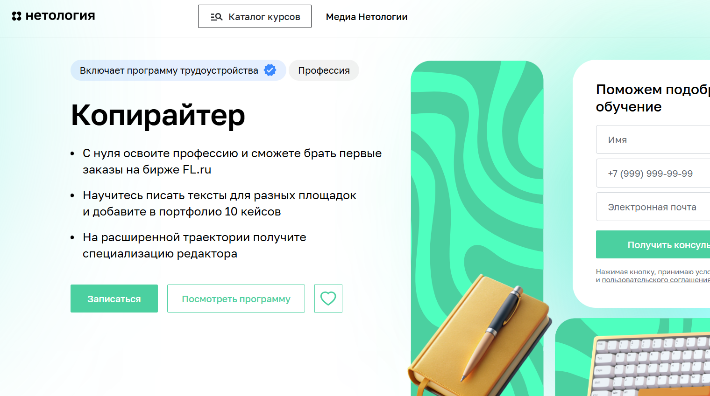
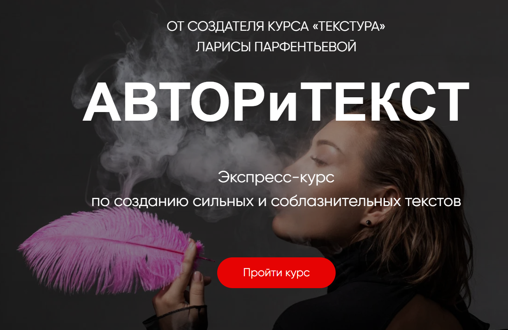
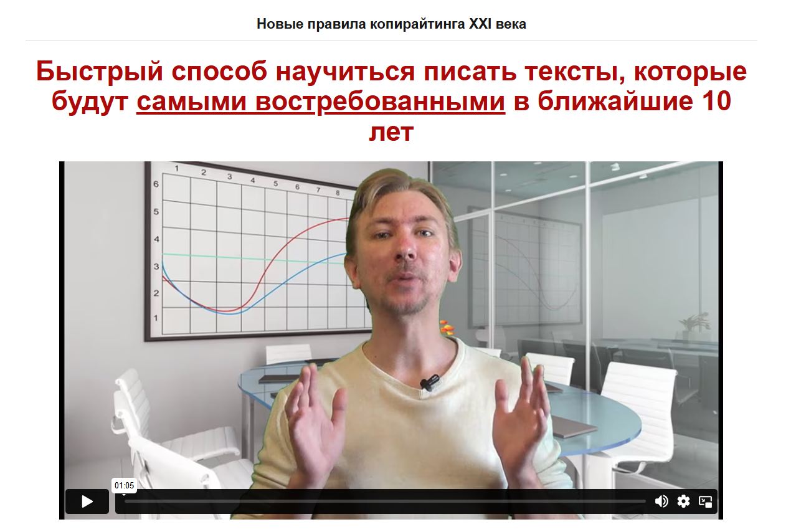
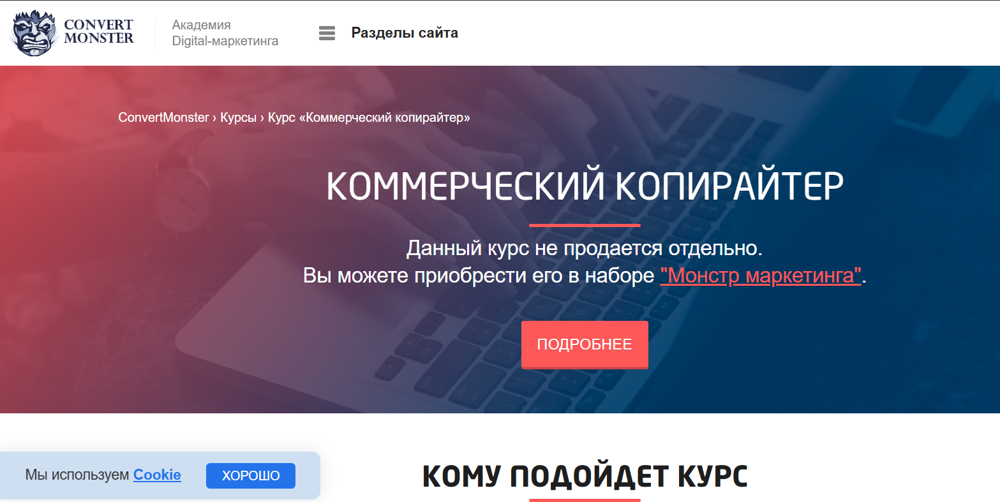

№1 Копирайтинг от А до Я — Skillbox

Ссылка: https://skillbox.ru/course/copywriter/
Стоимость курса: 2 457 руб./в месяц (доступна рассрочка на 12 месяцев)
Общая сумма: 29 484 руб.
По окончании курса вы получите сертификат, который подтвердит вашу квалификацию и станет вашим преимуществом при устройстве на работу.
В процессе обучения вы освоите искусство написания текстов для разных аудиторий, что поможет привлечь внимание и повысить ваш доход.
Вы получите доступ к чек-листам и примерам, которые помогут создавать эффективные тексты.
Кроме того, вы составите портфолио из пяти выполненных работ.
Программа включает практические задания, основанные на реальных сценариях.
Вы будете иметь неограниченный доступ к образовательным материалам.
Кому подойдёт этот курс
Начинающим авторам
Вы познакомитесь с основами копирайтинга, научитесь создавать качественные тексты, собирать информацию и структурировать её так, чтобы заинтересовать читателя.
Специалистам в области контента и SMM
Вы получите навыки написания эффективных рекламных текстов для социальных сетей, email-рассылок, лендингов и других рекламных форматов, что поможет существенно расширить вашу целевую аудиторию и укрепить отношения с клиентами.
Студентам и выпускникам гуманитарных факультетов
Вы получите практические навыки в коммерческом письме и научитесь решать практические задачи бизнеса.
Тем, кто хочет зарабатывать на текстах
Вы познакомитесь с профессией копирайтера, научитесь грамотно писать в различных форматах и находить интересные проекты для начала вашей карьеры.
Чему вы научитесь
Создавать тексты высокого уровня.
Вы сможете работать в различных стилях и форматах, приводя примеры в своих материалах.
Анализировать брифы.
Вы освоите методы быстрого ознакомления с заданиями и эффективного взаимодействия с клиентами.
Создавать контент с учётом целевой аудитории.
Вы узнаете, как учитывать потребности читателей и генерировать востребованные материалы.
Редактировать свои тексты.
Вы научитесь убирать сложные формулировки и ненужные слова, создавая уникальные и запоминающиеся материалы.
Презентовать свои идеи.
Вы освоите подходы к реагированию на правки и конструктивному общению с клиентами.
Составлять портфолио.
Вы поймёте, как правильно подбирать работы для своего портфолио, обосновывать ценность своих услуг и представлять себя будущим клиентам.
Структура курса
Вас ждут вебинары и практические занятия, анализирующие реальные кейсы.
8 модулей обучения.
41 онлайн-занятие.
Основы профессии.
Разные форматы текстов — статьи.
Разные виды текстов — карточки.
Форматы текстов — email-рассылки.
Иные текстовые форматы.
Создание эффективного текста.
Взаимодействие с клиентами и организация рабочих процессов.
Личный брендинг.
Финальная работа: написание текстового контента по заданию.
Преподаватели
Сергей Король — контент-директор в Яндексе.
Людмила Сарычева — head редакции «Гладлакс», редактор и автор книг по текстам.
Полина Накрайникова — редактор по развитию в «Горящей избе».
№2 Факультет редактуры и копирайтинга в Geekbrains

Диплом о профессиональной переподготовке — имеется.
Государственная образовательная лицензия — имеется.
Стоимость: от 2 907 руб. в месяц с возможностью рассрочки на 36 месяцев.
Форматы обучения:
Групповые занятия с преподавателем.
Онлайн-лекции и вебинары.
Записи занятий в виде видео.
Продолжительность курса — 12 месяцев (два занятия в неделю)
Итог — Диплом
4 работы в портфолио.
ГАРАНТИЯ — Трудоустройство после окончания курса.
Кому подходит курс
Копирайтерам
Главная цель любого коммерческого текста — продемонстрировать клиентам, как ваш продукт способен решить их проблемы. Вы научитесь делать это доступно и привлекательно.
Тем, кто хочет сменить профессию
Станьте специалистом, создавая качественные информационные продукты и формируя портфолио для старта карьеры.
SMM-менеджерам и email-маркетологам
Расширьте свои карьерные возможности, получив навыки работы с текстами в роли редактора, что повысит вашу эффективность и показатели конверсии.
Программа обучения
1
Подготовительный этап: определение профессии.
Создание текстов.
Работа с информацией.
Редактирование.
Введение в профессию.
2
Юридические аспекты.
Тексты для интернет-пространства.
Этика в медиа.
Основы авторского права.
Редакция и её ключевые моменты.
Риски в работе с контентом.
Защита прав редактора и копирайтера.
3
Формирование контентной стратегии.
Базовые навыки вёрстки.
Создание цифровых проектов.
Аналитика.
Тематика контент-стратегии.
Методы распространения контента.
Контентный план.
Редакционная политика.
4
Работа в команде.
Взаимодействие с клиентами.
Фриланс.
Роли в команде и распределение задач.
Инструменты проектной работы.
Поиск подрядчиков и управление критикой и оплатой.
Бюджет.
Эксперты
Павел Федоров — продакшен-директор КБ «Палиндром».
Создатель Telegram-канала «Паша и его прокрастинация», автор подкастов «Поредачим» и «Что-то горит». Участвовал в запуске спецпроектов для «Лайфхакера», работал в «ВКонтакте», управляя содержанием на Profi.ru, также занимал редакторские позиции в «Нетологии».
Татьяна Симакова — главный редактор сайта The Village.
Основатель медиа-проекта «Большая деревня», публиковалась на Wonderzine, Colta.ru, OpenSpace и «Афиша Daily».
Вы научитесь создавать привлекательные тексты, которые невозможно игнорировать, учитывая различные целевые аудитории и цели, и успешно продвигая продукты.
№3 Коммерческий редактор/копирайтер — Нетология

Ссылка: https://netology.ru/programs/kontent-menedjer-edpro#/presentation
Формат обучения: видеолекции, вебинары, тесты, онлайн-мастерклассы, финальный проект.
Содержание курса включает базовые модули и выбор специализации.
Работа редактора контента направлена на решение бизнес-задач: подбор текстовых форматов, формирование команды и создание контентной стратегии, а также оценка её результата.
Профессия коммерческого редактора охватывает редактирование, понимание задач и управление процессами.
Кому подходит этот курс
Журналистам, копирайтерам и новичкам в редактировании
Вы погрузитесь в мир digital, сделаете шаг к смене профессии и начнёте работать с контентом для бизнеса.
Маркетологам, специалистам по PR и SMM
Вы изучите методы продвижения бренда с помощью контента и взаимодействия с редакционными командами.
Тем, кто планирует сменить профессию
Вы научитесь создавать тексты для различных форматов, упаковывать контент, разрабатывать стратегии и управлять редактированием.
Чему вы научитесь
Создавать материалы, соответствующие бизнес-задачам
Написание статей для корпоративных блогов и медиа, создание контента для постов в социальных сетях и email-рассылок.
Верстка статей и лендингов
Создание текстов в Tilda, Readymag, Setka, WordPress и формирование полноценных информационных продуктов.
Использовать методы сторителлинга
Подбор иллюстраций, соблюдение типографических норм, создание «чистого» текста.
Оптимизировать редакционные процессы
Планирование работы команды, разработка стандартов редактирования, создание контент-планов и определение показателей эффективности.
Организовывать дистрибуцию контента
Выбор каналов для продвижения, расчёт бюджета, составление медиапланов.
Работать с аналитикой
Мониторинг показателей с помощью веб-аналитики для оценки эффективности контента и маркетинговых стратегиям.
Итоговое задание
Вы создадите стратегию контента или бизнес-план с концепцией специального проекта, основываясь на реальной задаче, либо вам будет предложена учебная задача в случае, если её не будет.
Форматы обучения
Курс «Коммерческий редактор с нуля».
Для всех, кто желает совершенствовать свои навыки в новой профессии.
8,5 месяцев, 330 часов, 52 лекции по 1,5 часа, 27 домашних заданий с оценкой.
Содержание программы:
Работа с текстом.
Упаковка контента.
Специализация: основы контент-маркетинга. Вы научитесь размещаться в соцсетях, создавать лендинги, вести корпоративные блоги и составлять email-рассылки, а также разрабатывать контент-стратегию.
Возможность рассрочки: 3 785 руб./месяц на 18 месяцев.
Общая стоимость: 68 140 руб.
Коммерческий редактор PRO
Для профессионалов, работающих с текстами и стремящихся развивать свои навыки в редактировании.
7 месяцев обучения предполагают 309 или 262 часа занятий в зависимости от выбранной специальности. Программа включает 42 или 48 уроков, каждый из которых длится полтора часа, а также 18 или 12 домашних заданий с обратной связью.
Содержание курса
- Подготовка контента.
- Искусство повествования.
- Выбор специализации: основы контент-маркетинга или разработка уникальных проектов.
Исследуйте разнообразные форматы контента и их эффективность. Освойте использование платформ Tilda, Readymag, Setka и WordPress. Научитесь организовывать команду и превращать ваш проект в источник дохода.
Мы предлагаем рассрочку: 3 326 рублей в месяц на протяжении 18 месяцев.
Общая стоимость курса составит 59 880 рублей.
Учебный план
- Основной курс.
- Создание маркетингового контента.
- Редактирование и оформление материалов.
- Искусство повествования.
- Специализации по пакету «Продвинутый редактор».
- Разработка контент-стратегий.
- Создание уникальных проектов.
Коммерческий автор от TexTerra

Сайт: https://teachline.ru/courses/commercial-author/
Стоимость: 12000-26000 рублей.
Общее время обучения: 14 видеолекций по 1,5 часа
По завершении курса вы получите диплом и рекомендательное письмо, что облегчит поиск клиентов.
Этот курс поможет вам:
- Быстро освоить новую профессию и начать зарабатывать удалённо из любой точки мира.
- Увеличить стоимость своих услуг, выходя на уровень, где цена ваших текстов соответствует средней и высокой категории рынка.
- Научиться писать тексты для бизнеса. Если вы работаете в маркетинге и не обладаете навыками подачи анонсов, рекламных материалов, образов и статей – этот курс именно для вас.
Вас ожидает:
- 14 видеоуроков по 1,5 часа.
- Проверка домашних заданий и обратная связь от преподавателей.
- Возможность задавать вопросы кураторам.
- Знания и навыки для написания текстов различных форматов – от статей до лендингов и интервью.
- Основы SEO и интернет-маркетинга.
- Методы редактирования и корректуры текстов.
- Инструменты для поиска клиентов (включая менее известные).
- Доступ к дополнительным материалам курса и записям лекций в течение года.
Содержание курса:
Вводный модуль в мир копирайтинга. Мы рассмотрим задачи и характер работы копирайтера в контент-маркетинге, определим его ответственность и возможности карьерного роста, а также ознакомимся с этическими нормами профессии.
Разнообразие текстового контента и его уникальные особенности. Что делает контент эффективным и современным? Рассмотрим основные типы контента и методы их создания. Тексты для одностраничных сайтов: изучим структуру текста для лендинга, его ключевые составные элементы и формы обратной связи. Понять, почему текст для одностраничного сайта важен для стратегии. Обсудим внедрение уникального контента в статьи.
Необычные форматы: инфографика, видео, тесты, white paper. Что такое ньюсджеккинг и как его использовать? Способы измерения вовлеченности аудитории. Что актуально для B2C сегмента и что для B2B?
Основы источниковедения. Как правильно подбирать темы, оптимизировать контент и находить проверенную информацию?
Структура и оформление текста. Как по-разному воспринимается печатный текст и текст на веб-странице? Как структура текста влияет на его восприятие? Основы HTML для коммерческих копирайтеров. Как грамотно оформлять публикации.
Примеры успешного и неудачного оформления. Стилистические особенности. Как знание стиля помогает создавать привлекательные тексты? Почему важно понимать стилистику, когда редактор вносит правки? Как читатели реагируют на тексты, написанные в различных стилях? Какие стилистические приемы следует освоить?
Журналистика и коммерческое письмо. Сравнительный анализ отличий между коммерческими авторами и журналистами. Какие качества важны для хорошего журналиста? Форматы контента, используемые в журналистике.
Творческое письмо. Упражнения, развивающие литературное мастерство с использованием различных техник.
Утренние страницы. Методика от противного. Фрирайтинг: различные подходы к созданию контента. Как писать тексты для социальных сетей: посты и рекламные объявления. Основные концепции контента для соцсетей.
Как разработать структуру рубрикатора и контент-план. Обычная структура поста. Форматы контента для различных социальных сетей, таких как Instagram, ВКонтакте и Facebook.
Редактирование и корректура. Принципы самоконтроля: как проверять свои тексты, не теряя их первоначального замысла? Как вносить изменения, не нарушая авторского стиля?
Основные правила редактирования. Корректура. Важные факторы, которые стоит учитывать. Как проводить самопроверку и на какие источники опираться в вопросах русского языка? Что делать, если встретились новые слова, которые еще не присутствуют в официальных словарях?
Основы SEO. Как привлечь трафик с помощью поисковых систем? Почему текстовая оптимизация так важна? Где искать ключевые слова и как правильно их интегрировать в текст? Как избежать переоптимизации? Основные принципы SEO. Где находить клиентов и как продвигать свои услуги? Как найти прибыльные проекты?
Как эффективно представлять себя и строить личный бренд? Как собрать портфолио и подготовить коммерческое предложение. Практическое занятие. Обсуждение ошибок и ответов на вопросы, которые могут возникнуть в ходе учебного процесса, а также устранение пробелов в знаниях. Практические советы.
Копирайтер для экспертов и онлайн-школ — Ольга Придейная

Сайт: https://prideina-course.ru/
Цены:
Самостоятельное обучение – 22500 р.
Базовый курс – 29500 р.
Расширенный пакет – 45500 р.
Кому будет полезен данный курс
Программа подходит для:
- людей, желающих начать карьеру в копирайтинге и работать удаленно;
- творческих людей, мечтающих превратить увлечение письмом в профессию;
- тем, кто хочет обеспечить себе стабильную занятость в условиях экономической неопределенности;
- контент-креаторам в Instagram, стремящимся улучшить свои навыки;
- всем, кто жаждет не только теоретического обучения, но и практического опыта;
- тем, кто хочет научиться писать высокооплачиваемые тексты.
Курс адресован
Новичкам в копирайтинге. Вы освоите техники написания текстов для лендингов, email-рассылок, лид-магнитов и постов в Instagram, включая рекламные и экспертные статьи. Результатом станет ваше готовое портфолио, что позволит найти работу сразу после завершения обучения.
Опытным копирайтерам. Вы научитесь улучшать качество своих текстов, углубите знания о маркетинге и сможете эффективно представить свои услуги с целью повышения их стоимости. Также будет предоставлена информация о принципах работы инфобизнеса.
Сотрудникам SMM, контент-менеджерам и администраторам Instagram. Вы получите навыки создания привлекательных текстов, которые будут захватывать внимание читателей, а также выясните, как привлекать подписчиков и увеличивать продажи с помощью текста. Эти знания расширят ваши возможности и способствуют увеличению дохода.
Формат учебного процесса
Месяц интенсивного обучения с акцентом на практику написания текстов.
Курс будет проходить в онлайн-формате на платформе Getcourse. Каждую неделю для вас будут проводиться живые вебинары, где вы сможете получить новую информацию. Всего запланировано 4 вебинара, на которых можно задать вопросы и проанализировать распространенные ошибки. Если вы не сможете участвовать в вебинаре, у вас будет возможность посмотреть записи.
На каждой стадии обучения вам будут доступны видеоуроки и дополнительные материалы в виде электронных документов: чек-листы, руководства и многое другое.
Два раза в неделю вам предстоит выполнять домашние задания в удобное для вас время.
Вы получите подробную индивидуальную обратную связь в аудиоформате на нашей платформе, и ваша работа не останется без внимания.
Также будет создан групповой чат, в котором вы сможете взаимодействовать, получать поддержку и задать актуальные вопросы. Внутри чата можно общаться как с автором курса, так и с другими участниками.
На пятой неделе у вас появится возможность пройти стажировку на реальных проектах (для учащихся с тарифами «Базовый» и «Максимальный»), что позволит вам общаться с клиентами и искать работу даже во время обучения.
После завершения курса вы получите доступ к Telegram-каналу с актуальными вакансиями, что облегчит вам поиск работы.
Содержание курса
1-я неделя
1-й блок: Искусство создания убедительных коммерческих текстов. Эффективные методы продаж через текст.
Как написать ясный и привлекательный текст.
Структура текста.
Формулы написания успешного контента.
Как зацепить читателя с помощью захватывающего начала.
Психология продаж. Продающие блоки в тексте. Как выделить преимущества продукта или услуги.
Призыв к действию: как его составить.
Как добиться успеха в продажах, избегая неловкости.
2-я неделя
2-й блок: Оформление текста для лендинга.
Создание страницы захвата для вебинара эксперта: структура и важные компоненты.
Как разработать привлекательные заголовки и подписи.
Использование триггеров.
Элементы текста для лендинга – одна из самых востребованных и высокооплачиваемых услуг.
3-й блок: Написание текстов для email-рассылок.
Основополагающие принципы успешной email-рассылки.
Как эффективно формировать email-рассылки для экспертов, чтобы каждое письмо было прочитано.
Разнообразие форматов рассылок.
Построение серии писем для вебинаров.
Что включать в письма.
Роль копирайтера в создании рассылок.
Как оценить успешность email-рассылки и повысить ее эффективность.
Методы предотвращения попадания в спам.
3-я неделя
4-й блок: Создание экспертного контента для Instagram.
Как наладить близкий контакт с подписчиками.
Основы написания экспертных текстов.
Как найти общий язык с экспертом и адаптироваться к его стилю.
Контентная воронка и стратегии привлечения клиентов через посты и истории.
Планирование контента и стратегии продвижения в рамках воронки.
5-й блок: Как привлечь максимальное количество участников на вебинар через Instagram.
Эффективные способы анонсирования вебинаров и приглашения участников с помощью постов в блоге эксперта.
Традиционные и креативные подходы к подаче информации.
[/spoiler>
Сторителлинг: Искусство составления историй
Методы привлечения внимания аудитории.
4-я неделя
Блок 6: Лид-магниты
Что представляют собой лид-магниты?
Разновидности лид-магнитов и способы получения дохода копирайтера с их помощью.
Основные функции лид-магнитов.
Ключевые принципы их разработки.
Дополнительные занятия:
- Занятие от психолога: «Как преодолеть страхи новичка-копирайтера».
- Занятие: «Создание текста для лендинга с оплачиваемым продуктом».
- Занятие: «Управление проектами в копирайтинге. Как грамотно организовать задачи и проекты».
- Занятие: «Управление задачами и использование таск-менеджеров».
- Занятие: «Роль контента в продвижении образовательных продуктов».
- Занятие: «Проектирование прототипа лендинга».
- Занятие: «Яндекс.Дзен: как эффективно использовать его возможности».
- Занятие: «Создание текста для таргетированной рекламы».
Прохождение стажировки (для тарифов «Базовый» и «Максимум»)
5-я неделя
Стажировка (для тарифов «Базовый» и «Максимум»)
О преподавателе курса
Ольга Придеина
- Копирайтер и филолог, автор курсов по копирайтингу.
- Опыт работы в копирайтинге более 5 лет.
- Автор свыше 4500 коммерческих текстов на заказ.
- Организатор курсов, воспитавшая более 600 студентов, среди которых есть специалисты, работающие с известными блогерами.
Курс копирайтинга

Хотя базовые навыки письма формируются еще в школьные годы, не каждый способен грамотно выражать свои мысли, взаимодействовать с читателями и достигать поставленных задач через текст.
Копирайтинг — это важный навык для современного профессионала, который может служить как дополнительным, так и основным источником дохода.
Школа юного копирайтера предлагает курс, способствующий освоению написания коммерческих текстов. Программа охватывает основы копирайтинга, особенности написания для различных форматов и целей, технические требования, рекомендации по редактированию, методы и практические задания, способствующие развитию креативности и повышению качества контента.
Курс состоит из 8 онлайн-занятий с практическими заданиями. Работая над текстами, вы обретете необходимые навыки, получите отзывы от преподавателя и возможность изучать работы своих коллег.
Занятия проходят в онлайн-формате по будням с 10:00 до 12:00 дважды в неделю.
Интенсивный копирайтинг-курс

Цена: 8 888 РУБЛЕЙ
Длительность: 4 недели
7 обязательных уроков по 1,5-2,5 часа: 6 записанных и 1 онлайн-трансляция.
6 домашних заданий с индивидуальным анализом каждой работы и отслеживанием прогресса.
Структура курса
- Основы качественного текста: создайте свой первый текст, следуя правилам копирайтинга.
- Пример образцового текста: научитесь разрабатывать материалы, которые вызывают положительные эмоции и интерес.
- Анализ ошибок: обучение выявлению и исправлению ошибок для повышения ясности и выразительности текстов.
- Методы написания: ознакомьтесь с простыми подходами, которые облегчат процесс создания текста.
- Художественные приемы: насыщайте текст эмоциями и создавайте запоминающиеся образы в сознании читателя.
- Нативная реклама и интервью: изучите, как представить продукт таким образом, чтобы привлечь интерес рекламодателей.
Курс по техническому копирайтингу

Время учебного процесса: 72 часа.
Стоимость для частных лиц: 19800 руб.
Стоимость для организаций: 24900 руб.
Цели обучения
Развитие профессиональных умений в области формирования технической документации и анализа в IT-сфере. Обучение проходит в дистанционном формате, где вы можете выбрать удобное время и дату начала занятий.
Чему вы сможете научиться во время курса и что вас ждет по его окончании?
Для тех, кто только начинает свою карьеру, мы поможем освоить профессию технического писателя и подготовить базовые материалы для вашего портфолио.
Вы ощутите радость от профессионального роста и получите доступ к множеству новых знаний.
Убедившись в своих знаниях и получив сертификат от нашей учебной организации, вы сможете уверенно начать планировать свою карьеру. Если у вас есть существующий опыт, но вы хотите углубить свои знания или прояснить некоторые вопросы, обучение станет отличной платформой для их улучшения.
Вы получите больше удовлетворения от своей работы, что поможет справляться с более сложными задачами.
Опытные технические писатели, готовые принять критику, смогут увидеть свои слабости и поработать над ними в процессе обучения.
Кроме новых знаний, вы получите возможности для карьерного продвижения, так как стремление к развитию всегда на вес золота!
Учебный процесс: Программа курса
- Погружение в профессию:
- Способы становления техническим писателем.
- Юридические аспекты специальности.
- Классификация документов и их целевая аудитория.
- Требования к оформлению документации и статей.
- Особенности стиля технической документации.
- Основы создания технического контента.
- Методика оформления документации для программного обеспечения и устройств.
- Создание научных и аналитических статей.
- Разработка видеоматериалов и слайд-презентаций.
- Описание технических схем и кода.
- Составление технических заданий и текстов для маркетинга.
- Работа с переводами и создание контента для сайтов.
- Знакомство с необходимыми программными средствами и особенностями работы редактора.
- Процесс создания документации и действующие стандарты.
- Возможные направления для самостоятельного изучения.
- Проверка документации на соответствие стандартам.
- Итоговое задание: создание документа, обзорной статьи или презентации.
Последний курс по копирайтингу
Содержание курса
- Написание — постоянная практика. Обучение включает не только вебинары с теоретической информацией.
- 49 видеоуроков: доступ к записям в любое время и возможность повторного просмотра.
- Личный кабинет с доступом с любых устройств и удобной подачей учебного материала.
- Каждый урок сопровождается заданиями для закрепления изученного.
- Ответы на ваши вопросы в течение суток, возможность получения индивидуального отзыва по запросу.
- Практические примеры — минимизация теории для актуальной информации.
- Неограниченный доступ к курсу — обучайтесь в удобном для вас темпе.
- Формирование вашего портфолио с рекламными текстами для выбранного контента.
- Онлайн-вебинары, на которых разбираются ваши работы и обсуждаются пути их улучшения.
- Возможность самостоятельной работы с обратной связью по вашим текстам.
- Поддержка групповых обучений и обсуждений написанных материалов.
Присоединиться к группе можно в любое время, количество завершивших не имеет значения. Каждый выбирает свой темп обучения индивидуально. Главным элементом нашего формата являются еженедельные встречи по воскресеньям, на которых мы обсуждаем ваши работы. Если вы пропустили занятие, не беспокойтесь! У вас всегда будет возможность вернуться и просмотреть записи.
ИЛИ ИНДИВИДУАЛЬНЫЕ ЗАНЯТИЯ СО МНОЙ ПО SKYPE
В этом формате мы применяем индивидуальный подход: вы получите разбор каждого задания на консультации по Skype и освоите дополнительные методики с учетом ваших потребностей. Этот способ подходит не всем, так как требует больше времени и финансовых затрат. Если ваше время ограничено, проще заниматься в группе.
Авторский Курс — Надежда Сокирская

Сайт: https://sokirskaya.ru/
Длительность: 6 недель обучения
СТОИМОСТЬ КУРСА:
Базовый — 35000р
Больше практики — 46000р
Максимум практики — 85000р
Для чего нужен курс?
Этот курс пригодится тем, кто стремится обучиться написанию коммерческих текстов, даже если у вас нет опыта. Если вы пишете и готовы трудиться, за шесть недель вы освоите основы профессии, наработаете опыт работы с реальными клиентами и оформите собственное портфолио.
Тем, кто уже пишет тексты и хочет увеличить свой доход, программа позволит выявить сильные и слабые стороны, проанализировать ошибки, освоить новые подходы и повысить уверенность. Вы научитесь создавать контент, который привлекает клиентов и сделает вас востребованным автором для блогеров, продюсеров и предпринимателей.
Формат занятий
Курс включает шесть недель интенсивных занятий с выходом уроков по будним дням и выполнением 12 домашних заданий. Участники делятся на группы (по 10-12 человек) под руководством куратора. Все работы проверяются куратором, предоставляется развернутая обратная связь и работа над реальными проектами с отзывами от клиентов. Вы создадите актуальное портфолио на платформе Tilda и получите доступ к поддерживающему Telegram-каналу с коучем, а также возможность накопления баллов для получения призов.
Структура курса
Вводный раздел. Доступ сразу после оплаты.
Поиск работы. Доступ на второй неделе курса.
Базовые навыки копирайтера.
Тексты, способствующие повышению продаж. Практика с реальными клиентами.
Контент для социальных сетей. Работа с клиентами.
Создание портфолио. Подведение итогов пройденных тем.
Специальный модуль-тренажер для практики взаимодействия с клиентами.
Информация о преподавателе
Надя Сокирская
журналист, редактор и блогер. Окончила Литературный институт, известный высоким качеством подготовки. Более 10 лет работала в СМИ: начинала с редактора на радиостанциях «Русская служба новостей» и «Говорит Москва», затем стала выпускающим редактором сайта «Комсомольская правда». В период с 2014 по 2017 года занимала должность главного редактора Леди.Mail.Ru. Читала лекции по интернет-журналистике в МГУ, имеет опыт работы с стажерами и взаимодействия с авторами. Создала блог, который быстро привлек более 100 тысяч подписчиков, также преподавала в школе телевидения «Останкино ТВ».
КУРАТОРЫ
Наталья Семенова
Редактор PR-службы Правительства Москвы. Ранее работала редактором на aif.ru и шеф-редактором телеканала «Звезда».
Алена Костомарова
Шеф-редактор и заместитель руководителя спецпроектов МИА «Россия сегодня». Помогает компаниям в продвижении услуг и решении бизнес-задач. Имеет 14-летний опыт работы с текстами и сотрудничала с изданиями, такими как Geo и РБК.
Конструктор продающего текста от Школы копирайтинга Дениса Каплунова
Сайт: https://deniskaplunov.com/kpt/
Стоимость:
Стандарт: 18 525 руб
Премиум: 37 275 руб
В течение полутора месяцев, изучив более 70 примеров, вы освоите 100 наиболее эффективных приемов копирайтинга, что позволит вам повысить конверсию ваших текстов как минимум в три раза.
Кому этот курс будет полезен?
Предпринимателям и бизнесменам
Вы сможете создавать текстовый контент, который привлечет в 3–5 раз больше клиентов и значительно увеличит вашу прибыль.
Копирайтерам (как независимым, так и штатным)
Вы улучшите свои навыки, освоите новые подходы и заметно увеличите свою продуктивность, что повысит ваш доход.
Консультантам и экспертам
Вы научитесь писать тексты, способствующие продвижению ваших услуг, что увеличит средний чек и доходы.
Маркетологам и менеджерам по продажам
Вы узнаете важные навыки, которые дадут вам конкурентные преимущества и значительно улучшат результаты.
Что вас ждет на курсе?
Полтора месяца обучения
100+ методик копирайтинга
Проверка домашних заданий
70+ примеров текстов
Гибкий график обучения
18 видеолекций
Конспекты всех занятий
Дополнительные материалы
СОДЕРЖАНИЕ КУРСА
«Заголовки»
#1
Ключевой вопрос, который стоит перед заголовками.
Три основные функции заголовка.
Как привлечь внимание с подзаголовком.
Примеры успешных подзаголовков в продажах.
20 формул для написания эффективных заголовков.
Когда подзаголовок уместен и его основные функции.
20 примеров сочетания «Заголовок + Подзаголовок».
В конце: вы научитесь создавать привлекательные заголовки, которые привлекают внимание и вовлекают в текст.
«Вводная часть»
#2
Почему 80% текстов теряют читателя.
Формула для привлечения внимания читателя.
5 задач вводной части текста.
Значение микро-заголовков.
7 техник создания мини-заголовков и 34 примера.
10 основных подходов написания вводной части рекламного текста.
10 креативных способов начать текст.
В итоге: вы узнаете, как начать продающий текст так, чтобы вызвать доверие и интерес читателя.
«Описание и представление»
#3
Эффективность принципа «Тройной выгоды».
Способы обновления старого товара.
Методика двухэтапного представления товара.
Уникальное коммерческое предложение в 10-20 словах.
14 способов представления продукта или услуги
Дополнительный слоган для усиления сообщения + 7 креативных идей.
Итог: вы сформируете уникальное коммерческое предложение и освоите техники выделения ваших преимуществ, чтобы привлечь внимание на рынке.
Формирование успешных деловых кейсов и вдохновляющих историй
Как статистика может подкрепить ваши утверждения.
Инструменты, которые подчеркивают вашу профессиональную компетентность.
16 методов аргументации с наглядными примерами.
Результат: вы научитесь отбирать убедительные доказательства, успешно развеивать сомнения и опровергать аргументы, доказав результативность вашего предложения.
«Предложение цены»
#5
Принципы «ценовой продажи».
Способы создания текста в отсутствии фиксированной стоимости.
Стратегии использования сопоставительных цен.
5 приемов работы с расценками.
4 категории гарантий и 9 примеров их применения.
Способы обоснования стоимости.
Вывод: вы станете специалистом в формировании ценовых предложений, чтобы клиент сам увидел преимущества работы с вами.
«Заключительная часть текста»
#6
Методы завершения продающего текста без потери конверсии.
Формула, которая побуждает к действию.
Влияние специальных предложений на конечные результаты.
15 удачных примеров завершений рекламных текстов.
В результате: вы освоите особенности завершения ваших текстов, чтобы вызвать у читателя желание немедленно начать сотрудничество.
Как проходит процесс обучения?
Начальный этап
Вы получите доступ к обучающей платформе с материалами курса.
Обучающие материалы
Постепенно изучаете видеоуроки по каждому модулю (теория и практические примеры).
Практическое задание
Выполняете задания и отправляете их на проверку.
Оценка
Преподаватель анализирует вашу работу и дает рекомендации.
Консультации
Доступ к двум консультациям от Дениса Каплунова (в пакете «Премиум»).
Авторы курса
Денис Каплунов
Неизвестный эксперт в области копирайтинга, контента и маркетинга.
Восстановил отличную репутацию благодаря серьезному подходу к тексту.
Имеет 12 лет опыта в создании коммерческого контента.
Успешно завершил более 4000 проектов для более 700 клиентов.
Сотрудничал с свыше 100 компаниями в различных отраслях.
Основатель агентства «Студия Дениса Каплунова».
Что вы приобретете по окончании курса
- Бонус 1 — Мини-курс «Копирайтинг XXI века»
- Бонус 2 — Комплект из 10 чек-листов
- Бонус 3 — Мастер-класс «SOLD OUT»
- Бонус 4 — Мастер-класс «Клиенты из соцсетей»
- Бонус 5 — Мастер-класс «15 упражнений по копирайтингу»
- Бонус 6 — Мастер-класс «Коммерческое предложение на одну страницу»
- Бонус 7 — Мастер-класс «Переписка с клиентами»
«Базовый курс Главреда» от Максима Ильяхова

За последние шесть лет курс неоднократно обновлялся: появились новые темы, а старые получили свежие идеи. В конце 2019 года сотрудничество с Стасом Миляевым привело к созданию видео-версии, в которой собрано ключевое знание о создании эффективного текста в 13 небольших видео. Старая информация была обновлена и дополнена новыми элементами:
- Использование Главреда
- Анализ информационного стиля
- Опасные слова
- Вводные конструкции
- Оценочные фразы и усилители
- Штампы
- Сложные предложения
- Синтаксис
- Канцеляризмы
- Кинематографические приемы
- Уточнения
- Однородные члены предложения
- Ясность изложения
- Эффективная коммуникация
- Практическая ценность текста
- Контексты
- Подходы к дальнейшим шагам
Углубленный 2-месячный курс ИНТЕРНЕТ-ПРОФЕССИЯ КОПИРАЙТЕР 2.0 от Натальи Реген
Сайт: https://infovoronka.ru/ipk2-0-price-special Цена: Пакет «Базовый» — 13990р, Пакет «Стандарт» — 20990р, Пакет «Премиум» — 40990р
Как проходит процесс обучения?
Модуль 0
Подготовительный этап
На этом начальном этапе мы установим связь. Вы получите структуру курса и познакомитесь с методами обучения. Мы сосредоточимся на базовых принципах маркетинга, необходимых любому копирайтеру. Тщательно обсудим профессию копирайтера и формулу «Т», применимую в практике. Также вы сможете узнать, как найти своего первого клиента для стажировки, что даст возможность получить ценный опыт работы с реальными заказчиками.
Модуль 1
Статьи и материалы для веб-сайтов
Какие форматы и виды статей необходимо уметь создавать?
Шаблоны различных категорий статей.
Практические задания по написанию ваших первых статей для портфолио.
Основы написания текстов для наполнения сайта: главной страницы, страниц категорий, страницы услуг, страницы о компании и многих других.
Как создать структуру любого текста: практическое занятие.
Модуль 2
Продающие тексты
Вы узнаете о типах и форматах рекламных текстов.
Рабочая тетрадь с рекомендациями по структуре текстов, чтобы сэкономить время.
Формулы наиболее популярных рекламных текстов.
Практическое задание: создание продающего текста для вашего портфолио.
Модуль 3
Социальные медиа
Как организовать сторителлинг?
Создание контент-плана для клиента.
Как писать тексты для социальных сетей?
Размещение контента.
Методы подготовки аудитории к покупкам.
Рекламные и продающие посты.
Модуль 4
Рассылки, чат-боты и автоматизация воронок продаж
Как разработать стратегию рассылок (с примерами и шаблонами)?
Алгоритм написания пяти типов писем.
Создание автоматических воронок: теоретическая и практическая части.
Как разработать чат-бота: услуги от 15 000 рублей.
Модуль 5
Упаковка услуг и самопрезентация
Как составить бриф, описывающий порядок работы с клиентом?
Как правильно оформить портфолио.
Как разрабатывать примеры работ.
Как создать профессиональную страницу, группу или сайт для продвижения личного бренда.
Модуль 6
Поиск клиентов и получение заказов
Как находить платежеспособных клиентов?
Три наиболее эффективных способа привлечения долгосрочных клиентов.
Как уверенно вести переговоры, демонстрируя профессионализм?
Лучшие платформы для поиска клиентов.
Готовые шаблоны для обращения к заказчикам — что написать, чтобы привлечь их внимание к вашей кандидатуре.
Модуль 7
Определение специализации для увеличения дохода
Как выбрать нужное направление?
Основные направления в копирайтинге.
На выбор специализации: автоворонки, услуги, контент-маркетинг, интернет-магазины, онлайн-курсы.
Модуль 8
Комплексные предложения для клиентов
Как составлять повторные предложения клиентам для увеличения дохода от одного проекта?
Как правильно предложить клиенту комплексное решение: поэтапная инструкция.
Система привлечения заказов на сумму свыше 10 000 рублей за один проект.
Финальный этап
Аттестация для получения сертификата.
План профессионального развития: пути дальнейшего роста.
Личная система увеличения доходов.
Формат обучения
Занятия на платформе.
Постоянные обновления.
Вебинары с ответами на вопросы.
Поддержка наставника.
Удалённая профессия Копирайтер — Артур Грант и Вероника Головченко / Profi Internet
Сайт: https://copywriting.artur-grant.ru/ Продолжительность: 2 недели Формат: онлайн Цена: бесплатно
Что вы получите?
Вы сможете пройти двухнедельный курс по копирайтингу совершенно бесплатно. Начнете зарабатывать удаленно, создавая тексты согласно установленным требованиям.
Авторы курса
Артур Грант — соавтор курса и основатель школы Profi-Internet. Копирайтер с семилетним опытом, который за год карьеры перешел от низкооплачиваемых заказов — от 2 до 3 долларов за текст до ощутимых 200-400 долларов. Тексты Артура принесли более 28 миллионов рублей дохода за последние три года.
Вероника Головченко — активный коуч с более чем семилетним стажем в копирайтинге. Она обучила свыше 1000 человек как на курсах, так и в рамках индивидуальных уроков.
Специалист по копирайтингу
Сайт: https://copy2.0.profiinet.ru/ 3-месячный онлайн-курс. После завершения вы получите сертификат. Цена: пакет «СТАНДАРТ» — 9 900 руб/мес, пакет «VIP» — 15 900 руб/мес
Что вас ждет по завершении курса?
- статус сертифицированного специалиста
- упакованность как эксперт с полноценным портфолио и личным сайтом
- полное владение всеми аспектами работы и готовность выполнять любые сложные задачи (включая создание продающих текстов) от 5000 рублей
- умение привлекать высокооплачиваемых клиентов и наладить «сарафанное радио», чтобы клиенты приходили к вам самостоятельно
- верность в собственных силах (страхи и сомнения останутся в прошлом)
Курсовая структура обучения
Модуль 01
4 недели
Искусство создания текстов
- Основные инструменты для копирайтеров
- Различия между LSI и SEO-копирайтингом
- Специфика написания SEO-текстов для страниц веб-магазинов
- Правила форматирования текста
- Ключевые термины: сниппет, хлебные крошки, метатеги
- Дизайн текста
- Разработка контента для социальных сетей
- Методы мышления для облегчения выполнения задач
Модуль 02
1 неделя
Поиск первых клиентов на платформах
- Приобретение информации об оптимальных площадках для копирайтеров
- Создание профиля для привлечения клиентов
- Как грамотно готовить отклики и начинать зарабатывать
Модуль 03
4 недели
Формирование впечатляющего портфолио
- Создание интересного портфолио с нуля
- Определение стоимости ваших услуг
- Обнаружение вашего уникального торгового предложения (УТП)
- Поиск клиентов за пределами платформ: методы поиска и взаимодействия
Модуль 04
4 недели
Искусство написания продающих текстов
- Брифинг
- Анализ целевой аудитории, конкурентов и продукта
- Основные формулы успешного копирайтинга
- Пошаговое руководство по созданию продающих материалов
- Сторителлинг
- Проектирование лэндингов
- email-маркетинг
Модуль 05
1 неделя
Мастер-класс по написанию комментариев, способствующих увеличению продаж
Индивидуальный подход к работе с конкретными текстами.
.
Нахождение высокооплачиваемых клиентов
- Создание успешных кейсов
- 11 стратегий поиска клиентов от Артура Гранта
- Активные и пассивные методы привлечения клиентов
- Поиск клиентов как онлайн, так и оффлайн
- Формирование стратегического партнерства
Модуль 06
Неделя 1
Профессиональная упаковка ваших услуг
- Определение вашей профессиональной области
- Выбор специализации
- Создание уникального названия (брендинга)
- Разработка личного сайта
Знакомьтесь с авторами тренинга
Артур Грант
- Соавтор курса, маркетолог и копирайтер, основатель школы Profi-Internet
- На начальном этапе зарабатывал от $2-$3 за текст, позднее достиг уровня $200-$400
- За последние пять лет его доход превысил 140 миллионов рублей
Вероника Головченко
- Соавтор курса и тренер с более чем 8-летним стажем в сфере копирайтинга
- Обучила более 1200 студентов, многие из которых стали профессиональными копирайтерами
- Тексты Вероники принесли свыше 7 миллионов рублей
Кому будет полезен данный курс?
Начинающим:
Овладейте одним из наиболее высокооплачиваемых навыков 2019-2020 годов. Работайте из любой точки мира с гибким графиком и стабильным доходом.
Начинающим копирайтерам:
Станьте настоящими специалистами, преодолейте финансовые трудности и наладьте постоянный поток клиентов.
Профессионалам SMM, SEO, дизайнерам и маркетологам:
Расширьте спектр своих услуг, предлагая клиентам комплексные решения, что повысит вашу ценность.
Предпринимателям:
Сэкономьте средства, отказываясь от дорогих услуг и выбирая качественных специалистов.
Школа копирайтинга — Мария Солодар

Сайт: https://solodar.com/copywriting-school/ Обучение займет два месяца. По окончании курса вы получите сертификат. СТОИМОСТЬ — 59 900 РУБ.
Для кого подойдет этот курс?
Тем, кто ищет работу:
Желающим зарабатывать более 100 000 рублей, работая из любого уголка мира и стремясь к финансовой независимости.
Бизнесменам:
Тем, кто хочет запустить новое высокодоходное направление в бизнесе.
Маркетологам:
Желающим расширить перечень своих услуг, влияя на поведение клиентов через тексты.
Новичкам:
У которых нет опыта написания текстов, но есть желание прибыльно заниматься этим.
Чему вы научитесь в ходе курса?
Вы научитесь создавать эффективные тексты, включая письма, лэндинги, рекламные материалы и коммерческие презентации. У вас появится возможность писать посты для соцсетей, способствующие развитию вашего блога и увеличению продаж. Вы освоите создание текстов, которые побуждают клиентов моментально принимать решение о покупке.
Вы изучите, как повысить доходность проекта с помощью качественного контента. Также вы узнаете, как применять психологические приемы для убеждения даже самых недоверчивых клиентов. В процессе обучения вы поймёте, как строить долгосрочные отношения с клиентами и стабильно зарабатывать более 100 000 рублей в месяц.
Структура курса
МОДУЛЬ №1
Введение: ознакомление с профессией и организационные моменты
- Договор-оферта
- Что такое копирайтер? Основные аспекты профессии и подготовка к ней
- Работа с личным кабинетом и подача домашних заданий
- Работа с брифом — первоочередной этап создания любого продающего текста
Дополнительные материалы:
- Шаблон брифа для копирайтера
Результаты модуля:
- Вы освоили основные принципы копирайтинга
- Выбрали проект для практической работы
- Научились пользоваться обучающей платформой
- Освоили подготовку брифа
МОДУЛЬ №2
Психологические аспекты копирайтинга
- Основные характеристики для создания качественного контента
- Как оказывать влияние на действия читателя: 33 триггера, полезных копирайтерам
- Сторителлинг как основная методология для написания убедительных историй
Дополнительные материалы:
- Психология влияния в бизнесе и продажах
- 30 умственных триггеров с примерами текстов
- Руководство по созданию портрета целевой аудитории
- Инструкция по созданию аватара
- Примеры проблем, с которыми может столкнуться аватар
Результаты модуля:
- Вы ознакомились с основными аспектами копирайтинга
- Научились применять триггеры эффективно
- Создали портрет целевой аудитории и аватара
- Написали продающую историю для вашего проекта
МОДУЛЬ №3
Формулирование уникального предложения и создание эффективного оффера
- Разработка уникального торгового предложения и результативного оффера
- Создание привлекательных рекламных заголовков для привлечения внимания
Дополнительные материалы:
- Уникальное торговое предложение и заявления о ценностях
- Примеры успешных офферов
- Специальная формула для предложения
- Примеры офферов, использующих особую технику предложения
Результаты модуля:
- Создадите декларацию ценностей для вашего проекта
- Сформулируете эффективный оффер по специальной формуле
- Разработаете рекламные заголовки
МОДУЛЬ №4
Проектирование лэндингов и составление коммерческих предложений
- Методы создания лэндингов: создайте целевые и конверсионные страницы с высокой эффективностью
- Исследование коммерческих предложений и маркетинг-китов
Дополнительные материалы:
- Анализ платформы Mottor
- Пример разработки лэндинга на Tilda
- Ключевые элементы лэндинга: предложение, описание, призыв к действию
- Инструкция по созданию лэндинга
- Шаблон для разработки подписной страницы
- Пример прототипа для продающей страницы в Google Docs
- Инструкция по работе с Google Docs
- Коммерческое предложение и маркетинг-кит
- Схема «21 вопрос для упаковки» от Лебедева
- 117 вопросов для упаковки
Результаты модуля:
- Создадите проектировки страниц в конструкторе
- Подготовите коммерческое предложение для своего проекта
- Научитесь формировать коммерческую презентацию
- Представите свой маркетинг-кит в качестве копирайтера
МОДУЛЬ №5
Основы email-маркетинга и написание писем
- Основные принципы email-маркетинга для организации результативных рассылок
- E-mail как универсальный инструмент для продвижения
- Правила написания продающих писем
- Создание привлекательного коммерческого контента для социальных сетей
- Технические аспекты настройки автоматической рассылки через сервис GetResponse
Дополнительные материалы:
- Мастер-класс «Цепочка касаний»
- Инструкция по созданию писем для email-стратегий
- Инструкция по созданию воронок продаж
- Примеры стратегий email-маркетинга
- Видеоуроки по работе с программой Xmind
- Список рекомендаций для написания и оформления электронных писем
- Руководство по созданию и оптимизации серии писем
- Примеры электронных сообщений
- Секреты эффективного email-маркетинга (урок от GetResponse)
Основные выводы модуля:
- Вы научитесь создавать письма, которые будут часто открываться
- Разработаете стратегию email-маркетинга для своей компании
- Создадите набор сообщений, включая рекламные материалы
МОДУЛЬ №6
Копирайтинг для социальных сетей и мессенджеров
- Создание контента для Instagram: описание профиля, посты и рекламные объявления
- Оформление страниц и привлечение аудитории на Facebook
- Разработка интересного и коммерческого контента для соцсетей
- Копирайтинг для мессенджеров
БОНУС: Психология продаж в социальных сетях
Дополнительные материалы:
- Гид «Основы написания публикаций»
- Примеры оформления профилей
- Преимущества и недостатки Facebook
- Примеры привлекательных и интересных публикаций
- 5 распространенных ошибок при создании публикаций
- Искусство сторителлинга
- Структура удачной истории для продаж
- Пошаговая инструкция по написанию историй
- Примеры успешных историй
- 7 рекомендаций для рассылок в мессенджерах
Результаты модуля:
- Вы сможете правильно настроить профили ваших проектов на Instagram и Facebook
- Научитесь анализировать успешные страницы в соцсетях и узнаете причины их успешности
- Создадите цепочку интересных постов
- Изучите различные форматы контента для мессенджеров
- Научитесь создавать сообщения, актуальные для мессенджеров
МОДУЛЬ №7
Копирайтинг для видео
- Создание текстов для рекламных видеороликов
- Разработка сценариев для вебинаров «Запуск по Волкеру»
Дополнительные материалы:
- Пример сценария для видео
- Образец рекламного видео курса по эротическому танцу
- Сценарий для «Одноразового предложения» (OTO)
- Сценарий для рекламного ролика
- Пример OTO
- Как подготовить презентацию для успешного вебинара или выступления
- Шаблон презентации для продажи в Google Презентациях
Основные выводы модуля:
- Создадите сценарий рекламного видео для вашего товара
- Изучите методы успешных запусков и напишите сценарии для видео о вашем продукте
- Сконструируете структуру презентации для вашего проекта
МОДУЛЬ №8
Итоговый проект
Получите сертификат
Ваш БОНУС за отзыв о Школе копирайтинга
Итоги модуля:
- Вы получите готовые образцы и шаблоны, которые упростят написание любых текстов
- Сертификат будет выдан по итогам успешной защиты проекта
БОНУСНЫЙ БЛОК
- Где искать клиентов и как новичку увеличить свою ценность
- Ценовой диапазон услуг копирайтера: как адекватно оценить свою работу перед заказчиком?
- Как найти удаленную работу в компании своей мечты: от составления резюме до прохождения интервью в онлайн формате
- Налогообложение для фрилансеров и самозанятых: важные аспекты
СПИКЕРЫ
Мария Солодар
Эксперт в области интернет-маркетинга, продюсер онлайн-проектов и успешный бизнесмен.
Олег Баша
Генеральный директор GetResponse в России, специалист по email-маркетингу.
Информационный стиль и редактура текста от Бюро Горбунова

Посетите сайт: https://bureau.ru/educenter/text/
Учебная программа
День первый: работа с текстами
- Разные виды информационного стиля
- Основы редактирования текстов
- Что такое информативность
- Стоп-слова и их роль
- Практическое задание: нахождение стоп-слов в текстах
- Факты как основа аргументации
- Практика: выбор фактов для улучшения текста
- Ошибки авторов разных уровней: начинающие, опытные и мастера
- Практическое задание: повышение информативности текста о компании
День второй: структурирование предложений и абзацев
- Уровень информационной насыщенности абзацев
- Применение активного залога в предложениях
- Основы пунктуации
- Практика: редактирование на уровне предложений
- Логика конструкции абзаца и метод «капралов»
- Практика: редактирование на уровне абзацев
- Создание заголовков и подзаголовков
- Использование списков
- Логичное изложение мысли
- Корректировка и изменение структуры
- Практика: структура статьи
- Ритм текста
- Обучение через текстовые материалы
- Практика: написание блога
День третий: создание информационного продукта
- Что делает текст успешным? Формула успеха
- Искренность, манипуляция и лесть
- Адаптация к целевой аудитории
- Синтаксис для иллюстраций
- Риски использования неподходящих иллюстраций
- Практика: выбор иллюстраций для статьи
- Идеальные члены предложения
- Язык пользователей и технологии
- Практика: составление публичного заявления
- Контрастный подход: акцентирование внимания
- Параллельное изложение. Текст в сокращениях и заметках
- Тексты на различных носителях: бумага, ПК, мобильные устройства
- Технозависимость. Проблемы с неэффективными страницами
- Практика: параллельное изложение
- Структура информативной статьи
- Практика: подготовка к публикации статьи
День четвертый: рекламный текст
- Принцип высокой полезности
- Реклама, которую будут рекомендовать
- Эффективный заголовок рекламного текста
- Структура рекламного текста
- Эмоции клиента в рекламе
- Способы создания рекламного контента: плохие и хорошие
- Умные гарантии
- Работа с аргументами и отзывами
- Обратная связь от клиентов
- Метод «Ловля на крючок»
- Длинные и короткие промостраницы
- Текст для страницы товара в интернет-магазине
- Создание текста, который будет полезен пользователям и поисковым системам
- Практика: разработка длинной промостраницы
- Обобщение: методика написания текста
- Тонкости редакционной работы
- Инструменты редактирования и правила редакционной политики
- Польза и вред текста: когда стоит воздержаться от написания
Автор и лектор курса
Максим Ильяхов
Главный редактор бюро с 2009 года, создатель «Главреда», автор рекомендаций по редактированию и информационному стилю, имеет степень кандидата педагогических наук.
«Инициал» от Lifehacker.Ru

Посетите: https://lifehacker.ru/special/initial/
Цена: курс бесплатно
Научиться создавать качественные тексты довольно легко, если у вас есть стремление, время и готовность к практике. Важным аспектом является наличие опытного наставника.
Редакция Лайфхакера станет вашим гидом в мире письма. Мы анализировали и редактировали множество статей, сформировали свой опыт, который теперь готовы передать вам через регулярные рассылки.
Курс состоит из 12 писем, которые вы будете получать каждую неделю. Каждое письмо наполнено теоретическим материалом и множеством примеров.
Вы сможете освоить:
поиск интересных тем;
Школа копирайтинга — Ольга Соломатина
Длительность: 2 месяца. Стоимость: 24900р.. Диплом установленного образца по окончании курса.
В нашем онлайн-центре вы освоите одну из самых актуальных профессий современности и сможете зарабатывать, работая из дома или любого другого удобного места, даже находясь в уходе за детьми.
Обучение в Школе копирайтинга охватывает три ключевых направления:
- Навыки взаимодействия с клиентами.
- Теоретические и практические аспекты копирайтинга и маркетинга.
- Компетенции в области самопрезентации и поиска хорошо оплачиваемой работы.
Учебная программа
1. Эффективное взаимодействие с клиентами. В ходе обучения вы будете выполнять реальные задания и получать за это вознаграждение. Мы обсудим, где и как копирайтеру находить заказы. Научитесь создавать технические задания как вместе с клиентом, так и самостоятельно. Овладейте навыком задавать корректные вопросы для уточнения запроса заказчика. Познакомьтесь с процессом согласования текстов. Узнайте, кто ваш целевой клиент и с кем стоит избегать сотрудничества. Изучите методы разрешения конфликтов с клиентами и их предотвращения. Обсудим, что означает недовольство клиента, когда он говорит: «Мне это не нравится». Научитесь обсуждать комментарии и предлагать изменения. Поймете, что делать, если заказчик не укладывается в сроки.
2. Теоретические и практические стороны копирайтинга и маркетинга. В ходе обучения вам предстоит активно участвовать в написании и редактировании текстов, что является одним из наиболее эффективных способов освоить нужные навыки. После выполнения заданий я предоставлю обратную связь и объясню, почему именно такие измененияцелесообразно вносить. Вы познакомитесь с источниками, которые помогают копирайтерам в поиске информации, и получите представление о различных методах её поиска. Мы рассмотрим более 20 видов материалов и научимся выбирать наиболее подходящие в зависимости от ваших задач. Вы освоите написание текстов в различных стилях: информационном, деловом, научном, художественном и других. Научитесь работать с разными жанрами — от постов в социальных сетях и заметок до аналитических статей, колонок и эссе. Мы разберем 12 типов пресс-релизов. Вы приобретете навыки редактирования как собственных, так и чужих материалов. Ознакомитесь с такими терминами, как канцеляризмы, стоп-слова и шаблоны, и поймете, как их использовать. Ошибки в написании и пунктуации будут рассмотрены с помощью корректур Издательского дома «КоммерсантЪ». Мы различим копирайтинг и журналистику, а также научимся проводить и оформлять интервью. Вы получите основные знания о стилистике. Специалист в области маркетинга расскажет вам о рекламе, воронке продаж и уникальных торговых предложениях, в то время как я дополню информацию о создании продающих текстов и нативной рекламе. Вы сможете создавать контент, касающийся компаний, экспертных мнений, обзоров и отзывов. Мы изучим методы работы с возражениями. Мы проанализируем графику текстов и страниц. Научимся принципам сторителлинга и правилам адаптации контента для различных соцсетей. Вы также научитесь составлять привлекательные заголовки и подзаголовки. Обсудим, как правильно описывать изображения и упрощать сложные тексты, когда это возможно. В сотрудничестве с веб-разработчиками мы рассмотрим структуру целевых страниц. Разберем, когда целесообразно использовать таблицы и графические элементы вместо текста. Мы пригласим юристов Издательского дома «КоммерсантЪ» для обсуждения вопросов авторского права, согласования цитат и комментариев. Вы узнаете, что такое сюжет и как его создавать. Это поможет вам научиться формировать цепочки писем и удерживать внимание вашей аудитории. Освоите стратегии ответов на возражения и негативные комментарии под публикациями. Поймёте, как преобразовать устную речь в письменный формат. Мы установим критерии качества текстов.
3. Навыки самопрезентации и поиска высокооплачиваемой работы. Вы получите понимание формирования редакционных политик. Научитесь представлять себя, создавая свое резюме и портфолио. Подготовите сопроводительные письма. Вы освоите методы получения отзывов и рекомендаций. Узнаете, как редактировать чужие тексты, не вызывая конфликтов. Справитесь с перфекционизмом и критическим внутренним голосом. Поймете реальную стоимость своих услуг на рынке. Выясните, что именно «продаёт» копирайтер. Мы обсудим, как преодолевать страхи, связанные с повышением цен, и как корректно отказаться от проектов, если это необходимо. Научитесь писать регулярно. Узнайте, как избежать эмоционального выгорания. Поймёте, что дедлайны могут стать вашими союзниками, а также научитесь контролировать уровень стресса. Мы разберем, как отличать разумные требования от неуместных, и выясните, что на самом деле означает «слишком дорого». Вы увидите, сколько времени требуется на выполнение работы копирайтером. Мы обсудим перспективы карьерного роста совместно с рекрутерами.
Копирайтинг за 2 месяца — Мария Налобина

В ходе обучения вы получите:
- Истинную заинтересованность клиентов в ваших текстах и готовность за это платить.
- Навыки создания качественных текстов, соответствующих заданным требованиям, что позволит вам зарабатывать.
- Четкий план действий для получения первых заработков в интернете.
ЭТО ОЧЕНЬ ВАЖНО! ????
Курс станет идеальным выбором для тех, кто мечтает стать высокооплачиваемым копирайтером, но не знает, как начать, а также для опытных специалистов, стремящихся к развитию!
Вы получите знания о всех нюансах этой востребованной профессии и доступ к моим уникальным методам!
Лектор:
Мария Налобина — предприниматель, работающая в интернете более пяти лет, умеющая создавать тексты, которые приносят свыше 10 миллионов.
Мария детально расскажет об актуальных текстах на сегодняшний день и о том, как зарабатывать от 50 тысяч рублей в месяц, выполняя всего 2-3 качественных заказа.
Такого вы ещё не видели, это наши уникальные разработки.
Вы научитесь зарабатывать на копирайтинге и находить возможности для этого.
Профессия Копирайтер — Дамир Халилов
Сайт: https://damir-halilov.ru/kurs_copywrite/
Длительность: 2 месяца Формат: Видеоуроки
Цена:
SILVER — 24 700 руб.
GOLD — 28 700 руб.
PLATINUM — 44 700 руб.
Рассрочка: От 2059 рублей в месяц
Кому подходит этот курс
Для предпринимателей
Вы научитесь разрабатывать эффективные рекламные тексты для вашего бизнеса. Создадите макет сайта и подготовите коммерческое предложение или презентацию, что позволит увеличить ваши доходы.
Специалисты в области SMM и смежных областях
Вы освоите искусство написания привлекательных постов для соцсетей, рекламных компаний и прочих медиа, создадите контент-стратегию для достижения ваших бизнес-целей.
Копирайтеры
Углубите свои знания, создайте личный бренд и повышайте расценки на свои услуги.
Желающие освоить востребованную профессию
Вы получите прибыльную и интересную специальность, которая позволит работать в удобном для вас режиме.
Чему вы научитесь
Создавать
Эффективные тексты
Вы научитесь писать на разные темы, в различных стилях и под различные задачи.
Понимать
Нужды вашей аудитории
Научитесь создавать контент, который будет интересен вашим читателям и клиентам.
Находить
Креативные идеи
Изучите методы креативного мышления и научитесь генерировать инновационные идеи.
Приносить
Пользу для бизнеса
Поймёте, как сформировать доверие к вашему бренду с помощью текстового контента и привлекать больше клиентов.
Продвигать
Ваш продукт
Вы узнаете, как находить клиентов и формулировать свои предложения.
Организация обучения
Курс основан на практических занятиях. Для эффективного освоения программы достаточно будет уделять 3-5 часов в неделю.
01
Видеоуроки три раза в неделю
02
Контроль и рекомендации по выполненным заданиям от преподавателей
03
Чат для взаимодействия с кураторами и другими участниками
04
Четыре воркшопа с Дамиром, где мы разбираемся с текстами студентов в режиме реального времени
05
Чек-листы, шаблоны, презентации и доступ к библиотеке вебинаров
06
Создание сайта-визитки и портфолио по окончании обучения
07
Получение сертификата от школы и государственного образца
08
Доступ к закрытому каналу с предложениями о трудоустройстве для выпускников по завершении курса
Содержимое курса
ВВЕДЕНИЕ В КОПИРАЙТИНГ
ТЕХНИКИ КОПИРАЙТИНГА
БИЗНЕС-СТОРИТЕЛЛИНГ
ТЕКСТЫ ДЛЯ СОЦИАЛЬНЫХ СЕТЕЙ
ТЕКСТЫ ДЛЯ ВЕБ-САЙТОВ
ТЕКСТЫ ДЛЯ E-MAIL РАССЫЛОК
ТЕКСТЫ ДЛЯ ПРЕЗЕНТАЦИЙ, ПРОДАЖНЫХ МАРКЕТИНГ-КИТОВ, БРОШЮР
СТАТЬИ И ПУБЛИКАЦИИ В СМИ
МОНЕТИЗАЦИЯ И ПОИСК КЛИЕНТОВ
Расширенный модуль и VIP-класс
УПАКОВКА ТЕКСТА
УЧЁТ И ПРОДВИЖЕНИЕ В ЯНДЕКС.ДЗЕН
ЛИЧНЫЙ БРЕНД И СТРОИТЕЛЬСТВО КОПИРАЙТИНГ-АГЕНТСТВА
Об авторе курса
Дамир Халилов
Основатель агентства GreenPR, первого SMM-агентства в России, автор популярной книги «Маркетинг в социальных сетях», которая была удостоена почётной награды в рамках Книжной премии Рунета 2014 года в категории «Выбор читателей». Регулярно выступает на таких мероприятиях, как РИФ, RIW, «Российская неделя маркетинга», Российская неделя продаж, Суровый Питерский SMM, СПИК.
Тексты на 360 — Ксения Лебедева
Сайт: https://upgrademarket.ru/textspro Цена: неизвестна
Кому будет полезно?
Тем, кто ищет творческую профессию
Чтобы работа приносила не только доход, но и удовольствие.
Начинающим копирайтерам
Чтобы быстрее покинуть уровень «пишу тексты за 100 рублей за 1000 знаков».
Фрилансерам и удалённым сотрудникам
Для овладения новым навыком, который повысит ценность ваших услуг.
Структура курса
1
Основы
— Принципы копирайтинга
— Какие ваши сильные стороны как писателя?
— Виды текстов
— Распространенные ошибки копирайтеров
— Рекомендуемая литература
Результат: вы будете осознавать языковые конструкции копирайтеров, ориентироваться в этой сфере и разработаете чёткий план действий.
2
Журналистика
— Основы написания текстов
— Источники информации
— Разные форматы текстов
— Правила написания
— Характеристики создания блоковых текстов и интервью
— Как придумать интересный заголовок
— Принципы успешного автора
— Поиск работы:
1) Как составить сопроводительное письмо
2) Как указать на отсутствие опыта
3) Как создать резюме
4) Где искать рабочие предложения
Итог: вы обретете солидные знания в области журналистики и развиете умения по написанию материалов для различных медиа.
3
Рекламные тексты
- Особенности копирайтинга, ориентированного на увеличение продаж
- Форматы эффективных продающих материалов
Постигайте требования клиентов: обнаружение и удовлетворение
- Эмоциональные побуждения
- Как предложить свою помощь, не отвлекая клиента
- Контент для ведения онлайн-бизнеса
- Продвижение через электронные коммерческие письма
Вывод: подарите своим клиентам заботу, а не навязчивую рекламу.
Тексты для блогов
- Особенности блогового контента
- Создание эффективного контент-плана
- Техники привлечения аудитории
- Как заинтересовать читателей, даже если это не ваш формат
- Кликбейт: когда и как это использовать
- Сторителлинг как метод удержания читательского внимания
- Посты, способствующие росту продаж
Вывод: овладейте мастерством ведения своего или чужого блога.
Финансовые возможности
- Методы монетизации ваших умений
- Фриланс: как положить начало вашему пути
- Нахождение клиентов: фриланс-платформы
- Образец заявки для стажировок
- Бриф для клиентов
- Как повысить ваш доход
- Расширение бизнеса и делегирование полномочий
Вывод: разработайте эффективную систему доходов и узнайте, как увеличивать свои расценки.
SEO-копирайтинг
- Ключевые термины SEO-копирайтинга
- Как поисковые системы оценивают текстовую информацию
- Сравнение копирайтинга и рерайтинга
- Структура веб-сайтов
- Анализ технического задания
- Оформление сниппетов
Вывод: научитесь продвигать сайты с помощью текстов и наладьте эффективное взаимодействие с SEO-специалистами.
Психологические преграды на пути к финансовому успеху
- Алгоритм для установки целей
- Психология нехватки ресурсов
- Как преодолеть страх, связанный с деньгами?
Вывод: устраните ментальные преграды, мешающие вашему доходу.
Преподаватели курса
Ксюша Лебедева
Занималась написанием статей для продажи в интернете, управляла аккаунтами, обладает солидным опытом в журналистике моды и путешествий. Ее доход от текстов достигал 100 000 рублей ежемесячно; знает, как реализовать текст за 3500 рублей.
Маргарита Взнуздаева
Автор статей для платформ VC.ru, Habr, Diletant Media и других изданий. Понимает, как войти в журналистику и зарабатывать на текстах без ведения собственного блога.
Школа копирайтинга — The Words

Сайт: https://the-words.ru/
Стоимость: от 13500 до 150000 руб.
Для кого это будет интересно?
Сотрудники, ищущие новые перспективы
Это люди, которые хотят сменить работу, повысят свой доход, желают независимости и хотят проводить больше времени с семьей, избегая пробок на дорогах.
Копирайтеры
Подходит для тех, кто хочет увеличить стоимость своих услуг и стабильно находить высокооплачиваемые заказы, как эксперт, к которому обращаются клиенты.
Предприниматели
Подходит тем, кто осознает, что текст в мире цифровых товаров помогает донести ценность до клиентов, и стремится снизить расходы на маркетинг, увеличивая количество запросов и откликов.
Маркетологи
Для тех, кто хочет повысить свои навыки в копирайтинге, чтобы приносить компании реальную пользу, увеличивать доход и зарабатывать уважение среди коллег.
Фрилансеры
Для тех, кто нацелен на увеличение потока клиентов и значительное повышение цен на свои услуги за счет успешного позиционирования.
Мамы в декрете
Для желающих обеспечить стабильный доход, не отказываясь от мечт и стремящихся к независимости, при этом не жертвуя временем с ребенком.
Кураторы курса:
Анастасия Кузьмина
Наталья Ягфарова
Диплом
По завершении всего курса вы получите электронный диплом, который сможете разместить на своих интернет-ресурсах и добавить в резюме при поиске работы.
«Удалённая профессия копирайтер» от Profi Internet
Сайт: https://profiinet.com/course/kopirajting-besplatnyj-kurs
Стоимость: Бесплатно
Что вы сможете изучить на курсе
- Погрузитесь в профессию копирайтера и узнайте, насколько она важна для интернет-торговли.
- Создадите свой первый текст, на котором сможете зарабатывать.
- Узнаете, где найти своих первых клиентов.
- Составите свой финансовый план для достижения поставленных целей в доходах.
Кому будет полезно обучение?
Тем, кто хочет освоить актуальную профессию в области интернета (студенты, домохозяйки, специалисты, менеджеры, пенсионеры).
Тем, кому важно работать удаленно, уделяя 2-3 часа в день.
Тем, кто мечтает стать настоящим профессионалом, зарабатывающим достойные деньги, а не просто фрилансером.
Кто проводит занятия
Вероника Головченко
Соведущая учебного курса и опытный тренер с более чем восьмилетним опытом в копирайтинге. Она обучила свыше 1200 человек, ставших успешными копирайтерами и любящими свою профессию, зарабатывая благодаря этому. На протяжении своей карьеры она заработала более 7 миллионов рублей на написании материалов.
Артур Грант
Сооснователь онлайн-школы Profi Internet и специалист в области интернет-маркетинга с девятилетним опытом. Он разработал стратегию продаж, которая принесла его клиентам 140 миллионов рублей за последние пять лет.
«Профессия копирайтер-маркетолог» от GetProff

Сайт: https://getproff.ru/web/professiya-kopirayter/fb
Цена: бесплатно
Копирайтер-маркетолог
Как создавать эффективные рекламные тексты, за которые платят хорошие деньги.
Темы вебинара:
- Кто такой копирайтер-маркетолог и почему эта профессия стала популярной в 2019 году?
- Какой доход может получать копирайтер, создавая продающие тексты?
- Какие навыки необходимы копирайтеру-маркетологу?
- Плюсы и минусы данной профессии.
- С чего начать? Пошаговая инструкция.
Приходите, если вы:
- Хотите освоить написание текстов, способных продавать.
- Уже пишете на заказ.
- Желаете развивать свой бизнес через текст.
«АВТОРиТЕКСТ» от Ларисы Парфентьевой

Сайт: https://www.textura.pro/avtoritext
Цена: бесплатно
Что вас обучат
- Семь простых принципов создания увлекательного контента.
- Как разрабатывать захватывающие нарративы.
- Шесть основных принципов «прилипчивых» рассказов.
- Основы редактирования, сжатия и визуального оформления.
- Как создать свою уникальную историю.
- Как передать эмоции сразу через текст.
- Как установить связь с читателем и активно вовлекать подписчиков.
- Упражнения для тренировк
- Как преодолеть страхи и сомнения.
- Одиннадцать онлайн инструментов для работы с текстами.
- Список из 13 рекомендованных книг для авторов, журналистов и копирайтеров.
БОНУС: элементы вдохновения от успешного автора бестселлеров, блогера и журналиста.
Кому это будет полезно
Блогерам
Тем, кто хочет создать собственный блог и делиться личными историями.
Копирайтерам и журналистам
Для тех, кто хочет зарабатывать на текстах или мечтает начать карьеру в этой области.
SMM-специалистам
Тем, кто ведет корпоративные блоги или занимается продвижением своих услуг.
Креативным личностям
Для тех, кто хочет развить свой творческий потенциал.
Автор:
Лариса Парфентьева
Автор множества бестселлеров от издательства МИФ, таких как «100 способов изменить жизнь» и «33+. Алфавит жизненных историй». Журналист с 19-летним опытом, написавшая более 2000 материалов. Эксперт, проводила более 300 интервью, написала колонки для таких изданий, как Первый канал, Cosmo, Коммерсант FM, Forbes, Сноб, РБК и Elle.
«Бесплатный курс для копирайтеров» от Kadrof.ru

Во время курса вы освоите создание текстовых материалов для веб-сайтов с учетом требований поисковых систем и сможете зарабатывать на этом. Программа подходит даже для новичков. Даже при отсутствии опыта работы вы сможете изучить все главы курса, просто следуя предложенной последовательности онлайн-уроков и применяя полученные знания на практике.
Бесплатный курс включает шесть модулей. Рекомендуется проходить уроки в указанной последовательности для лучшего усвоения. Если у вас появятся вопросы, не стесняйтесь задавать их в комментариях, и мы постараемся ответить. Для большей продуктивности начинайте писать тексты сразу после первых уроков, например, для вашего блога на платформе Яндекс.Дзен.
Структура курса
- Основы копирайтинга и рерайтинга
- Как писать тексты разных жанров?
Основы SEO-оптимизации
Варианты дохода для копирайтеров
Где находить вакансии и заказы?
Обзор популярных платформ
Онлайн-курсы с практическими заданиями
Часть 1. Основы копирайтинга и рерайтинга
В первом модуле курса вам предоставлены 16 бесплатных уроков, которые ознакомят вас с ключевыми аспектами копирайтинга и рерайтинга. Вы изучите, как эффективно устанавливать сроки для своей работы и получите общее представление о данной профессии. Если у вас возникнут какие-либо вопросы по терминологии, пожалуйста, оставляйте свои комментарии под уроками.
Что такое копирайтинг и SEO-копирайтинг?
Финансовые аспекты профессии копирайтера?
Рекомендации по освоению навыков написания текстов для начинающих.
Рекламный текст: структура, особенности и типы?
Как инициировать процесс сбора информации для статей?
Как составить правильную текстовую структуру?
Как придумать заголовок для статьи?
Как создать и написание цепляющего введения к статье?
Что такое рерайтинг и как его осуществить? Пошаговое руководство
Ошибки в написании: виды и примеры
Как создать качественный текст? Алгоритм для копирайтера
Четыре основные проблемы в текстах начинающих копирайтеров
Частые ошибки, допускаемые копирайтерами
7 простых приемов для повышения вашей продуктивности
Как отличить реальные тестовые задания от мошенничества?
Как защитить свои авторские тексты?
Часть 2. Как писать тексты в различных жанрах?
Жанр текста определяет его категорию, основываясь на конкретных целях и характеристиках структуры. В этом курсе вы научитесь создавать материалы в самых востребованных жанрах. Рекомендуется по окончании каждого урока практиковаться, создавая текст на заданную тему в соответствующем жанре.
Как написать статью для блога или веб-сайта, SEO-статью?
Как разработать описание для компании?
Как правильно писать новости?
Как составлять посты для социальных сетей?
Как оформлять пресс-релизы?
Как написать описание товара?
Как составить коммерческое предложение?
Как формировать тексты для веб-ресурсов?
Часть 3. SEO-оптимизация текстов
Для того чтобы тексты, размещаемые на сайте, были удобны для пользователей, ищущих информацию через поисковые системы, важно правильно интегрировать поисковые запросы в тексты. Четыре следующих урока помогут вам освоить эти навыки.
Как оптимизировать текст для SEO?
Что такое Title, мета-теги и заголовок H1, и как их правильно создавать?
Как оценить качество текста? Контрольный список для SEO-копирайтера
Как повысить уникальность текста?
Часть 4. Способы заработка для копирайтеров
В рамках данного бесплатного курса вы изучили основы написания текстов для веб-сайтов. Далее вам следует разобраться, как применять эти навыки для заработка в интернете. В следующих уроках вы освоите ключевые методы заработка в области копирайтинга.
Как новичку начать зарабатывать на рерайтинге?
Как получать доход от написания статей в интернете?
Как зарабатывать, создавая стихи и поздравления?
Как начать карьеру копирайтера без опыта и портфолио?
Как находить высокооплачиваемые заказы на копирайтерских платформах?
Часть 5. Где искать работу и заказы для новичков
В этом разделе бесплатного курса для начинающих копирайтеров вы сможете ознакомиться с полезными ресурсами, где размещаются заказы и вакансии для удаленной работы.
Площадки для статей для новичков и опытных копирайтеров
Сайты, на которых копирайтеры могут зарабатывать
Бесплатные биржи для копирайтеров и рерайтеров
Группы в ВКонтакте и Facebook для поиска работы
Методы заработка для копирайтеров на Яндекс.Дзен
Компании, предлагающие удаленные вакансии
Ресурсы для поиска интересных предложений
Часть 6. Пошаговое обучение работе на биржах
Многие начинающие копирайтеры начинают свою карьеру на специализированных платформах, где размещены заказы на написание текстов. Мы собрали краткие обзоры основных сервисов, чтобы упростить вам их использование:
Как зарабатывать на Etxt.ru?
Как получать доход на Контент Монстер?
Как извлекать прибыль на Text.ru?
Как применять Copylancer.ru для заработка?
Пошаговое руководство по доходу на Кворк
Автор: Сергей Антропов
Дизайн текста и визуальное повествование от Бюро Горбунова

Сайт: https://bureau.ru/educenter/visual/ Стоимость: 39000р.
Автор курса — Максим Ильяхов
Ректор Школы редакторов, автор курса «Информационный стиль и редактирование текста», соавтор книги «Пиши, сокращай», а также создатель платформы «Главред».
Программа
1 день: Привлечение внимания
Информационный повод: различие между ситуационными и актуальными материалами. Искусственный интерес против натурального. Динамика популярности и аналитика смыслового воздействия.
Конкуренция за внимание: визуальная и смысловая агрессия. Контрасты. Современные тенденции визуального оформления.
Практика и эмоции: какие статьи получают лайки и репосты, а какие способствуют внимательному прочтению? Эмоциональный баланс.
Триггеры и эффекты: изобилие, авторитет, социальное признание, доверие. Приманки. Что мотивирует читателя нажатие? Что может отвлечь?
Профилактика отвлечения: визуальная аккуратность, чистота текста. Уделение внимания формату. Объем и ритм. Смещение форматов. Цвет как средство передачи информации.
Практическое задание: улучшение структуры текста.
LSI-копирайтинг: мастер контента

Сайт: https://petr-panda.ru/university/lsi-copywriting/
Стоимость: 16000р.
Обучение: как это происходит?
Вы будете изучать видеоуроки и дополнительные материалы. Если что-то станет неясным, не стесняйтесь задавать вопросы. Для лучшего усвоения материала после практически каждого занятия предоставляются тесты. Обратная связь по выполненным домашним заданиям будет только от П. Панды. При написании итогового проекта потребуется выбрать: 1) вид текста, 2) тему статьи, 3) запросы и структуру. После представления проекта вам предложат выполнить корректировки и дополнения. На этом процесс завершится!
Каковы ожидаемые результаты?
В конце обучения вы станете экспертом в области копирайтинга. Вы овладеете навыком написания LSI-текстов с нуля. Даже если что-то забудется, вы всегда сможете обратиться к учебным материалам для восстановления знаний. Ваш взгляд на тексты изменится, и вы начнете глубже осознавать их назначение. Вы научитесь выявлять актуальные темы для продвижения в любых областях, даже в самых насыщенных конкурентами. Вы будете досконально знать, как создавать LSI-статьи: от анализа ниши до получения результата. Ваши знания будут целостными, а множество вопросов и нюансов будут разобраны. Документация и контрольные списки окажут необходимую помощь на сложных этапах процесса.
Школа Отличного Копирайтинга [ШОК-3]

Сайт: https://novoseloff.tv/shkola-otlichnogo-kopirajtinga-shok-3/
Цена: бесплатно
Автор: Дмитрий Новосёлов
Программа
Занятие #1 – Основы SEO копирайтинга будущего.
В этом уроке вы узнаете:
— Как выделиться среди 99% соперников в сфере копирайтинга;
— Как эффективно начать зарабатывать даже во время обучения;
— Определение «SEO-копирайтинга будущего»;
— Первые шаги к созданию качественной статьи для онлайн-платформы;
— Как выбрать ключевое слово для написания и оптимизации текста;
— Как успешно обработать ключевое слово для достижения высоких позиций в результатах выдачи;
— И многое другое.
Занятие #2 – Мастерство создания заголовков и введений.
Что вы изучите на этом занятии:
— Как создавать привлекающие заголовки, способствующие повышению кликабельности (что будет оценено Яндексом);
— Шаблоны заголовков, которые подойдут для любой темы;
— Как оптимизировать заголовок под выбранный ключевой запрос;
— Простой метод, позволяющий предварительно оценить эффективность заголовка;
— Как написать первое предложение, которое побудит читателя продолжить чтение;
— Методы, позволяющие удерживать внимание в первых абзацах текста;
— «Секретный» прием, который заставит посетителя дочитать статью, даже если начало будет неудачным.
Занятие №3 – Создание и оптимизация статей
В нашем занятии мы обсудим:
- Способы быстрого написания длинных статей без потери их качества
- Как правильно оптимизировать текст, чтобы обеспечить его адекватное восприятие Яндексом, избегая переоптимизации
- Структурирование материала для упрощения восприятия
Занятие №4 – Заработок на тизерном копирайтинге
На этом уроке вам предстоит изучить:
- Как начать зарабатывать на ваших текстах уже через неделю, даже без наличия клиентов
- Как работает Яндекс.Дзен, его сильные и слабые стороны
- Темы каналов, максимизирующие доход и популярность
- Примеры успешных каналов, которые зарабатывают десятки тысяч в месяц, и рекомендации по достижению аналогичных результатов
- Три наиболее распространенных типа публикаций на платформе Дзена
- Чек-лист для создания привлекательного тизерного заголовка
- Проблемные моменты в тизерных заголовках и методы их улучшения
- 28 прилагательных, которые усилят привлеченность тизерного заголовка
Занятие №5 – Вирусный копирайтинг
Мы обсудим следующие темы:
- Как правильно анализировать вероятность «вирусного» распространения вашего контента
- Суть провокационных материалов и секреты их эффективного написания
- Как использовать критику в комментариях для достижения своих целей
- Выделение статей-успехов с примерами из известных компаний
- Другое, что поможет повысить вирусность вашего контента
Занятие №6 – Ответы на вопросы и анализ текстов
Сайт: https://www.udemy.com/course/textobot/
Цена: бесплатно
Чему я вас научу в процессе обучения?
- Методы быстрого написания текстов на различные темы
- Где искать заказы на написание текстов
- Способы создания качественного контента
- Как превратить случайных клиентов в постоянных
- Совершенствование навыков копирайтинга
Структура обучающего курса
Введение. Организация курса. Оптимальные пути его использования — 02:20
Подготовительный этап. Необходимые ресурсы — 03:34
Поиск новых заданий и с чего начать — 06:09
Прием №1. Эффективные техники написания — 08:40
Прием №2. Сокращение времени написания — 06:16
Прием №3. Использование мобильных устройств — 06:19
Создание прочных отношений с клиентами — 06:20
Повышение и расширение новых навыков
Занятие №7

Сайт: https://petr-panda.ru/university/
Сертификат: да
Кому будет интересен данный курс?
- Копирайтерам разного уровня навыков
- Специалистам в областях SEO, SMM и веб-дизайна
- Работникам сферы услуг и торговле
- Создателям брендов с фокусом на личную идентичность
Наша образовательная философия
Наш подход включает в себя три ключевых компонента:
- Копирайтинг: значимость слов и их способности удерживать внимание
- Психология: умение не только писать, но и понимать свою аудиторию, предугадывать её реакции
- Маркетинг: знание эффективных техник убеждения и увеличения продаж
Мы предлагаем методы, которые действительно работают на практике, в отличие от более распространенных подходов, которые могут оказаться неэффективными.
Занятие №8

Сайт: https://getproff.ru/course/professiya-kopirayter_copy2
Формат: онлайн
Длительность: 2 месяца
Стоимость:
Базовый курс (без обратной связи) — 8000р
Продвинутый курс (с обратной связью) — 16500р
Именной сертификат — да
В программу включены 6 модулей и 45 уроков. Учебные материалы обновляются регулярно, что обеспечивает актуальность передаваемой информации.
Вы сможете учиться в удобном для вас темпе и завершить обучение за 3-4 недели.
Мы обучим вас созданию тексты, способствующих развитию бизнес-проектов и получению прибыли.
Вы научитесь уверенно делать первые шаги на пути к самопрезентации и преодолевать страх перед получением заданий.
Структура курса
1. Основы написания
- Как четко и доступно донести информацию
- Зачем важно говорить на языке клиента
- Способы уменьшения объема текста без потери качества
- Структурирование материалов: что это такое и как это реализовать
- Каждый абзац должен содержать одну основную мысль: как сделать текст более ясным и убедительным.
- Форматирование: заголовки, абзацы, списки с буллетами.
2. Основные принципы маркетинга 4P
- Методы для определения целевой аудитории.
- Как идентифицировать потребности клиентов и их основные вопросы.
- Разработка уникального торгового предложения.
- Создание занимательных заголовков.
- Выделение достоинств компании и способы их донесения для клиентов.
3. Оценка компании и продукта
- Анализ целевой аудитории.
- Изучение конкурентов.
- Систематизация данных и определение ключевых аспектов.
4. Написание черновика
- Разработка плана структуры текста.
- Создание текстового контента.
- Редактирование: исправление ошибок, упрощение сложных фраз и сокращение текста.
5. Оформление текста
- Перенос текста в формат прототипа.
- Создание эффективных публикаций для социальных медиа и рекламы.
- Разработка коммерческих предложений.
6. Поиск клиентов
- Методы поиска потенциальных клиентов.
- Как представлять свои услуги.
- Работа с отзывами и конструктивной критикой.
Стратегия обучения
Структура процесса образования:
- Все уроки доступны в записи, позволяя изучать материал в любое время; доступ можно приостановить по необходимости.
- Проектом занимается команда опытных наставников, каждому учащемуся назначается до четырех кураторов.
- Создана группа для общения студентов, где они могут обмениваться опытом и находить партнеров.
Что вы получите по завершении курса
- Углублённое понимание профессии копирайтера и специфики данной деятельности.
- Научитесь общаться с клиентами, устанавливать цены и сроки, а также оформлять предоплаты.
- Зарегистрируетесь на фриланс-платформах и начнете получать реальные заказы.
- Научитесь задавать клиентам главные вопросы для получения необходимой информации для текста.
- Создание ментальных карт для каждого проекта.
- Знакомство с основами маркетинга, сегментацией и созданием уникальных предложений.
- Научитесь составлять привлекательные и информативные тексты, способствующие увеличению продаж.
- Узнаете, как создавать детализированные прототипы сайт и слайдов в Adobe XD и Draw.io.
- К концу курса соберете портфолио, которое будет демонстрировать ваши навыки.
- Научитесь успешно саморазвиваться на социальных медиа и фриланс-платформах.
- Начнете зарабатывать, возможно, даже во время курса, как это уже сделали некоторые из наших учащихся!
Занятие №9

Сайт: https://sp.novoseloff.tv/copywrite-kurs/
Формат: онлайн
Стоимость: 19500р.
Обзор курса
Модуль 1 — Перспективы SEO-копирайтинга
- Подробный алгоритм поиска ключевых слов для статей, обеспечивающий приток тысяч посетителей на сайт ежемесячно.
- Научитесь создавать заголовки, оптимизированные для поисковых систем.
- Освойте методику написания статей, которые занимают высокие позиции в поисковой выдаче.
- Разовьете умение быстро создавать качественный контент.
- Узнаете, как правильно публиковать статьи на веб-сайтах клиентов.
Модуль 2 — Современный Email-маркетинг
- Научитесь структурировать письма для увеличения объема продаж.
- Изучите техники создания коммерческих рассказов.
- Создавайте привлекательные продажи в email-рассылках, используя проверенные шаблоны.
- Применяйте креативные заголовки в своих email-кампаниях.
- Научитесь писать провокационные письма, чтобы активировать подписчиков.
- Узнайте, как организовать автоматизированные email-рассылки, работающие круглосуточно.
Модуль 1 — Искусство Уточнения
Вы будете тренироваться усиливать каждое слово, передавая максимальное коммерческое значение с минимальным количеством слов. Это станет вашим «профессиональным имиджем» в мире копирайтинга.
Модуль 2 — Специальные Сценарии для Вебинаров
- Научитесь создавать заманчивые заголовки для вебинаров, которые привлекут нужную аудиторию и повысят уровень конверсии.
- Изучите структуру сценария успешного вебинара из девяти шагов, чтобы четко понимать последовательность подачи информации.
- Узнайте, как подготовить ведущего согласно вашему сценарию, чтобы избежать ошибок, даже если текст безупречен.
- Изучите методы интеграции продающих элементов в интересный и полезный контент, избегая излишнего навязывания, что повлечет рост продаж.
- Получите практический опыт написания сценариев на менее знакомые темы, расширяя возможность для новых заказчиков и увеличивая количество поступающих предложений.
- Составьте контрольный список вопросов, который поможет извлечь нужные детали от клиента, позволяя ему фактически создать сценарий для вас.
- Научитесь писать интересные и убедительные истории для презентаций, укрепляя доверие среди аудитории, поскольку успешные предложения во многом зависят от доверия.
- Я поделюсь примерами успешных сценариев вебинаров, которые были оценены более чем в 50 тысяч рублей и станут для вас ориентиром для создания собственных работ.
Модуль 3 — Классический Копирайтинг «Прямого Отклика»
- Вы научитесь мастерству создания привлекательных заголовков, которые выделят ваши тексты среди множества других.
- Научитесь оценивать эффективность заголовка с помощью специальной «кислотной проверки» перед финальной версткой текста.
- Научитесь создавать эффективные рекламные тексты по четкой схеме, позволяющей вашим читателям оперативно принимать решения о покупке.
- Познакомьтесь с семью эффективными техниками, которые помогут привлечь внимание читателей, даже при условии, что вы работаете с рекламным контентом.
- Изучите методы внедрения «продающих триггеров», которые помогают клиентам увидеть ценность вашего предложения и усиливают доверие к вашему товару, что является важнейшим условием для успешных продаж.
- Вы сможете быстро разработать навыки, которые помогут создать крепкие отношения доверия между вами и вашими клиентами всего лишь с помощью нескольких фраз, изменяющих восприятие ваших текстов.
- Узнайте, как сформулировать привлекательное предложение — оффер, который вдохновляет клиента на моментальное действие, без использования манипулятивных техник.
- Вы получите возможность предвосхищать и развеивать сомнения ваших читателей, что существенно уменьшит вероятность отказа от вашего предложения.
- Изучите методы «эмоционального влияния», помогающие направить аудиторию к нужному состоянию в конце текста, что значительно увеличит шансы на успешные продажи.
- Научитесь так излагать информацию, чтобы ваши потенциальные клиенты мгновенно воспринимали всю необходимую продающую информацию, даже если читают быстро.
- Правильно оформите портфолио с текстами, написанными в процессе обучения, чтобы оно стало вашим основным инструментом для успешных продаж.
- Соберите отзывы от своих первых клиентов и правильно их оформите. Это поможет вам выделиться на фоне многих копирайтеров, которые пренебрегают этим важным аспектом.
- Научитесь развивать «сарафанное радио» — мощный инструмент привлечения высокопрофитных и лояльных клиентов.
- Создайте собственные контентные платформы, чтобы успешно продвигать свой личный бренд и выделяться среди конкурентов, тем самым увеличивая свой доход.
- Углубите свои знания в настройке рекламы в социальной сети ВКонтакте для привлечения клиентов непосредственно из вашего профиля.
- Освойте искусство коммуникации с клиентами, чтобы постепенно повышать свои расценки и находить оптимальные решения для баланса между личным временем и доходом.
- Узнайте, как создать сайт для копирайтера и писать статьи, которые помогут вам привлекать клиентов без необходимости тратить деньги.
- Организация информационных текстов и сбор необходимой информации.
- Получение доступа к методам создания заголовков: практические схемы.
- Состав, структура и повышение эффективности рекламных текстов.
- Основные принципы маркетингового анализа для копирайтера.
- Специфика и структура текстов для различных социальных платформ.
- Разнообразие текстов для социальных сетей и правила их написания.
- Ключевые элементы повествования и задачи сторителлинга.
- Типы, цели и структура текстов для брендов.
- Источники для вдохновения и ресурсы для проверки ваших текстов.
- Освойте методику создания оригинальных текстов для ваших веб-ресурсов и блогов.
- Сформируйте востребованный продающий контент.
- Научитесь писать сообщения для разных социальных медиа, учитывая их индивидуальные особенности.
- Развивайте навыки сторителлинга.
- Подготовьте свой первый текст для бренда.
- Основные принципы деятельности редактора.
- Художественная и коммерческая редактура.
- Сравнительный анализ работы на различных платформах.
- Взаимодействие с автором, создание технических заданий.
- Методы редактирования: правильная подача и восприятие правок.
- Формирование редакционной и контентной стратегии.
- Определение редакционной и контентной политики на примерах.
- Проверка фактов: основные аспекты при верификации материалов.
- Репутационные вопросы авторов и брендов.
- Научная достоверность и правовая ответственность в контексте сложных тем.
- Определение целевой аудитории.
- Формулирование преимуществ с акцентом на аудиторию.
- Работа с эффективными текстовыми формами.
- Создание текстов для решения бизнес-задач.
- Название или заголовок кейса.
- Подзаголовок или введение к кейсу.
- Презентация.
- Описание проекта.
- Цели взаимодействия.
- Этапы выполнения.
- Итоги.
- Будущие возможности.
- Выводы.
- Кто такой копирайтер.
- Разновидности текстов:
- По области применения.
- По стилю написания.
- Что делает текст качественным.
- Концепция.
- Доверие.
- Факты.
- Образность.
- Структура текста.
- Изучение продукта.
- Ваш продукт: услуга, товар, персона.
- Создание карты продукта.
- Путь клиента до покупки.
- Методы сегментации персонажей.
- Потребности.
- Образное описание персонажа.
- Аргументация потребности.
- Преимущества.
- Конкретизация.
- Возражения.
- Анализ интересов аудитории.
- Использование инструментов, таких как Вордстат.
- Церебро Таргет.
- Анализ видеоматериалов.
- Изучение блогов лидеров мнений.
- Определение потребностей.
- Комментарии в социальных сетях
- Темы для обсуждения
- Публикации в Instagram
- Отзывы клиентов
- Треугольник: узнавание — логика — эмоции
- Связь карты персонажа и карты продукта
- Формулировка выгод:
- Смысловая
- Тезисная
- Образная
- Метапоры
- Детали выгод
- Тексты для контекстной рекламы
- Тексты для таргетированной рекламы
- Посадочные страницы и вебсайты
- Профили в Instagram
- Сложные метафоры в текстах
- Методы дедукции и индукции
- Метод обоснованных аргументов
- Аргументы, доказательства и контраргументы
- Уточнения и детали в сложных ситуациях
- Различные форматы: сообщения в блогах, продающие статьи, обучающие материалы, новости, пресс-релизы
- Структура AIDA
- Структура PMPHS
- Формулировка заголовков
- Формулировка подзаголовков
- Шаблоны презентаций
- Формулировка выгод
- Связь продукта с бизнесом
- Шаблоны аргументации
- Шаблоны отзывов
- Презентация цен
- Презентация гарантий
- Риторические приемы
- Сертификаты, награды и рецензии
- Вдохновение для бизнеса
- Шаблоны призывов к действию
- Основы грамотности: шаблоны и канцеляризмы
- Как донести суть. Простые формулы успешного текста
- Базовая редактура в glvrd
- Оформление скучного текста: заголовки, маркированные списки
- Принципы пирамиды Минто
- Структура обучающего материала
- Основная идея
- Краткое резюме
- Шаги описания
- Сложные элементы
- Заключение
- Составные части обучения
- Блоки
- Списки
- Оглавление
- Подзаголовки
- Черновики
- Оформление
- Деловой стиль
- Личные публикации
- Эмоциональные посты
- Заметки
- Провокации
- Шаблоны
- Качественные прилагательные
- Концепт метафоры
- Контекст
- Виды образов
- Гипербола, парцелляция, противопоставление
- Анализ ощущений
- Основные схемы работы с текстами для видео
- Скрипты для видеопроектов на подписку
- Скрипты для продающих видео
- Скрипты для прогрева
- Скрипты информационных роликов
- Скрипты обзорных проектов
- Структура коммерческого предложения по А. Бурбе
- Создание логической основы коммерческого предложения
- Правила подготовки эффективных презентаций
- Формулировка аргументов
- Итоговый сценарий
- Материалы для корпоративных изданий
- PR и материалы для пресс-релизов
- Одностраничные веб-сайты
- Психологические триггеры
- Эффектные слова
- Сценарные разработки
- Варианты сторителлинга
- Структурирование рассказа и развитие персонажей
- Личные истории
- Мудрости в формате притч
- Выдуманные персонажи
- Для владельцев бизнесов
- Для авторов пабликов и каналов
- Для профессионалов-копирайтеров
- Для SMM-специалистов
- Способы активного вовлечения вашей аудитории в обсуждение постов
- Что следует включить в концовку текста, когда простого резюме недостаточно
- Как завладеть вниманием читателя с первого взгляда, даже если текст достаточно длинный
- Как использовать актуальные события и скандалы для повышения интереса
- Методы самопрезентации как специалиста для поддержания интереса к вашему контенту
- Способы выразить комплименты своей аудиенции и значение этого действия
- Как остроумно критиковать продукты и какую выгоду это приносит
- Как управлять эмоциями своей аудитории — создавать положительные эмоции или провоцировать недовольство, сохраняя границы
- Разнообразие стилей: создание выразительных метафор, коротких фраз и мемов
- Как рассказывать увлекательные истории, чтобы читатели были увлечены
- Схемы удачных продающих постов
- Типы проблем: реальные, трудности выбора, страхи. Как применять это в текстах
- Роли мужчин и женщин в контенте
- Два практических задания на уроке
- Как использовать принцип: «Развлекая, мы реализуем»
- Плюсы ньюсджекинга — повышение интереса и хорошее отношение алгоритмов соцсетей
- Совмещение психологии и копирайтинга
- Практическое задание на уроке
- Зачем на самом деле нужны метафоры?
- Лингвистические аспекты использования
- Методы из психотерапии для создания метафор
- Пять практических заданий на уроке
- Почему важен контакт с эмоциями читателя?
- Методы: «Конфликт интересов», «Управляемая агрессия», «Продаем радостное будущее» и другие
- Практическое задание для улучшения навыков на уроке
- Анализ методов работы с недочетами
- Как трансформировать недостатки в преимущества, используя психологические техники
- Как преобразовать негативные отзывы себе на пользу
- Три практических задания на уроке
- Как замаскировать продажу в тексте?
- Ситуации, когда это необходимо использовать
- Обсуждение распространённых ошибок и успешных методов
- Практическое задание на уроке
- Обсуждение ошибок и находок участников
- Анализ успешных примеров и тех, что необходимо доработать
- Формулирование выводов и выявление универсальных нюансов
- Как захватить внимание читателя?
- Как побудить к необходимым действиям?
- Смешение техник копирайтинга и психологии
- Наиболее действенные техники сторителлинга. Суть без лишних слов
- Истории из жизни, анекдоты и другие методы для сочетания развлечений и продаж
- Недостатки приемов — в каких ситуациях их лучше избегать
- Минимальный: 12,500 рублей в месяц или 25,000 рублей за весь курс
- Максимальный: 15,000 рублей в месяц или 30,000 рублей за раз
- Премиум: 30,000 рублей в месяц или 50,000 рублей за весь курс
Модуль 4 — Заработок и Монетизация
Бесплатный Курс Копирайтинга
Веб-сайт: https://school.rayushkina.com/copy-free
Цена: бесплатно
Легкий старт в профессию: схемы написания текстов для различных задач, а также два подарочных чек-листа!
Пять экспресс-уроков, пять обучающих писем и пять домашних заданий.
Два часа видеоматериалов, которые позволят вам самостоятельно писать тексты и находить клиентов!
Структура курса
В течение десяти дней вы изучите основные принципы копирайтинга, даже если у вас нет опыта в бизнесе или его продвижении!
Автор курса
Инесса Шаповалова
Копирайтер и маркетолог с пятилетним опытом работы в области копирайтинга.
Автор более трех тысяч текстов для различных нужд и бизнесов.
Спикер на конференциях и семинарах по маркетингу и продвижению продуктов.
Соавтор и тренер на марафонах, интенсивных курсах и семинарах по копирайтингу в Школе Успешного Фриланса.
Регулярный автор и редактор проектов в сфере интернет-маркетинга и фриланса.
Разработчик и практик текстовых воронок для внедрения и продвижения товаров и услуг.
Что вы получите по завершении курса
Курс состоит из пяти подробных уроков, в рамках которых вы познакомитесь с актуальными текстовыми формами. Также вы получите пять обучающих писем, содержащих теоретические источники. В итоге сформируете портфолио начинающего копирайтера!
Онлайн-курс «Редактура и фактчекинг» от главреда отдела SMM-компании TexTerra

Ссылка на сайт: https://teachline.ru/courses/redaktura-i-faktcheking/
Стоимость: 12000-18000 ₽
Длительность: 8 лекций продолжительностью 1,5 часа
Документ по окончании обучения: сертификат
Курс разработан Дарьей Завьяловой.
Что вы узнаете на курсе для редакторов?
Вы научитесь эффективно взаимодействовать с авторами, так как высококачественные редакторы ценятся в командах, а некомпетентные подвергаются критике.
Начнем с обсуждения подходов к созданию успешной редакторской стратегии. Чем тщательнее будет выполнена работа на начальном этапе, тем проще будет в дальнейшем.
Вы освоите методы проверки фактов, относящихся к научным данным или переводу, даже если это новый опыт для вас. Например, изучим практические аспекты фактчекинга.
Способность выявлять логические и стилистические ошибки, а также отделять главное от второстепенного – это важный навык, который мы будем развивать на протяжении курса. В конце обучения мы попробуем исправить несколько проблемных текстов.
Что вас ожидает после прохождения курса?
Вы сможете устранять недочеты в своих проектах, в результате сократив негативные отзывы. Остальные замечания будут легко обсуждаемы и оправданы. Вы станете специалистом в работе со сложными темами, благодаря чему откроются перспективы для более интересных проектов.
Структура курса
Проверка научной информации и практические аспекты
Как находить надежные источники информации? Этот вопрос интересует множество людей, особенно тех, кто не имеет опыта в сфере научных исследований. Как убедиться в правильности научных фактов без обращения к экспертам? Как выбирать научные новости и следить за актуальной информацией в соцсетях?
Переводы: преодолеваем языковые барьеры
Как проверить перевод, если вы не владеете языком? Мы обсудим, как работать с разными ресурсами, словарями и критериям для оценки надежности переводческих агентств. Как найти настоящего профессионала-переводчика, который понимает тонкости языка и его носителей?
Редактирование: девять шагов к безупречному тексту
Что можно почерпнуть из советского опыта редактирования? Поговорим об часто встречающихся ошибках, неологизмах, заимствованных словах и феминативах.
Практическое занятие по редактированию
Анализ двух текстов (сайт и социальные сети) с разбором.
Экспресс-редактирование
Как использовать онлайн-сервисы и чек-листы? Обсудим, как находить вакансии, составлять резюме или коммерческие предложения, а также развивать личный бренд. Поговорим о создании тестовых заданий для авторов и помощников, а также о взаимодействии с клиентами. Рекомендации по полезной литературе для редакторов.
Автор
Дарья Завьялова
С 2015 года я работаю в TexTerra. Мою карьеру я начинала как редактор, выполняя запросы клиентов, затем перешла на выполнение внутренних задач, став автором и редактором. Позже я углубилась в SMM, заняв позицию контент-стратега и главного редактора. Каждый этап моего профессионального пути предоставил уникальный опыт, которым я готова поделиться в рамках курса. Я также закончила курсы по научной журналистике и продолжаю развиваться в этой области, читая специализированные книги, исследуя ресурсы по сложным темам (медицина, фармацевтика, иностранные языки, строительство, тяжелая техника) и обучая новых редакторов в нашей команде. Я провожу занятия на курсах «Коммерческий автор», «SMM-специалист» и других. Мой опыт показывает, что я никогда не упускаю важных аспектов. Я научу вас тому же на своём курсе.
«Пиши живее!» от «Тимуроки»
Сайт: https://freetutorials.ru/courses/200-pishi-zhivee!
Количество уроков: 6
Сертификат по окончании: НЕ ВЫДАЁТ
Автор курса: Тимур Аникин
Описание курса
Это бесплатный курс, направленный на то, чтоб помочь избежать шаблонности в ваших текстах. Узнайте, как сделать их более выразительными и уникальными. Каждый урок длится от 15 до 25 минут. После теоретической части рекомендуется выполнять практические задания для улучшения своей авторской эстетики. Вы можете самостоятельно выбрать, сколько времени посвятить практике, что значительно повысит качество ваших статей, логов, рабочих документов и материалов для социальных медиа.
Школа копирайтинга Юлии Волкодав
Добро пожаловать в нашу школу копирайтинга!
1. Чтобы начать бесплатный курс по основам копирайтинга, выберите раздел «Попробуй свои силы».
2. Для изучения курса по написанию продающих текстов, нажмите на опцию «Мой первый продающий текст».
3. Для получения глубоких знаний предлагаемых в платных курсах, выберите соответствующий пункт в меню и перейдите к его описанию для покупки ключа доступа. Зарегистрируйтесь на сайте с этим ключом и получите доступ к курсу.
Бесплатные онлайн курсы копирайтинга для начинающих копирайтеров от Даниила Шардакова

Каталог курсов:
— Курс «Копирайтинг с нуля за 30 дней»
— Курс по SEO и LSI копирайтингу «Статьи и деньги»
— Курс «Прототипы продающих текстов»
— Курс по SMM копирайтингу «Тексты для соцсетей»
— Курс «Скрипты продаж» для копирайтеров
— Курс «Создание портфолио копирайтера за 1 час»
— Курс «Рассылки в Mailchimp»
— Экспресс-уроки по копирайтингу
— Информация о сертификатах
— Поддержка в поиске работы.
Курс «ОСВОЙТЕ ПРОФЕССИЮ КОПИРАЙТЕРА И НАЧНИТЕ ПРОДАВАТЬ СТАТЬИ В ИНТЕРНЕТЕ УЖЕ СЕГОДНЯ!»
Сайт: http://sub.ulia-volkodav.ru/poprobyi
Цена: информация отсутствует
10 детальных пошаговых видеоуроков.
Все очевидно и без лишних деталей.
Действительно бесплатный курс!
Уже в процессе обучения вы сможете увидеть первые результаты!
Станьте копирайтером всего за несколько дней!
Научим писать от «Сделаем»
Сайт: https://sdelaem.agency/courses/letters-how-to-write
Цена: 7000 рублей
Формат: Email-курс
40 уроков, которые будут приходить в виде писем каждый день.
Закрытая группа для получения рекомендаций и консультаций.
Курс по копирайтингу от агентства «Сделаем». Узнайте, как разрабатывать качественные тексты для бизнеса, формировать контент-план и анализировать результаты своей работы.
Кому этот курс подойдет
Копирайтерам
Авторам, работающим на фрилансе или в командах, стремящимися увеличить свои гонорары и участвовать в более интересных проектах.
Редакторам и маркетологам
Тем, кто создает задания для копирайтеров и хочет понять, на что следует обратить внимание.
Предпринимателям
Тем, кто не хочет нанимать специалистов и планирует писать самостоятельно для собственного бизнеса.
Содержание курса
Общие рекомендации
Как писать захватывающе
Заголовки
Привлечение интереса читателя
Ссылки
Обложки
Иллюстрации в текстах
Скриншоты
Прототипы страниц
Многообразие форматов контента
Создание текстов для социальных сетей
Корпоративные блоги
Письмо для новостных изданий
Лендинги
Реклама в Дзене
Email-рассылки
Сценарии
Руководства
Справочники
Пресс-релизы и новости
Информация о вашей компании
Описание товаров
Холодные коммерческие предложения
Теплые коммерческие предложения
Тексты вакансий
Отклики на вакансии
Подборки
Презентации
Лонгриды
Глубокий анализ
Продвижение текстов в соцсетях
SEO
Как взаимодействовать с комментариями и критикой
Анализ трафика
Веб-аналитика
Использование UTM-меток
KPI для авторов
Контент-план
Где находить темы для статей
Редактирование
Создание технического задания
Распространенные ошибки писателей
Эффективное взаимодействие с редактором
Команда
Паша Молянов
Занимается привлечением клиентов в агентство и анализирует успешность проектов.
Леша Рожков
Координирует внутренние процессы в агентстве и руководит командой, состоящей из 50 авторов и 12 редакторов.
Курс «Профессия: Копирайтер» от Convert Monster

Этот практический курс предназначен для обучения копирайтеров и включает формирование портфолио и освоение ключевых навыков.
Методы обучения
16 мастер-классов с выполнением домашних заданий и интерактивными консультациями.
Сертификат по окончании
выдается после успешной аттестации.
Поддержка куратора
Анализ домашних заданий на протяжении обучения и 30 дней помощи после курса.
Стоимость:
от 2750 рублей в месяц!
Возможность рассрочки на 3, 6 или 12 месяцев без дополнительных платежей.
Цена курса составляет 55 000 рублей.
Разработчик курса
Антон Петроченков
Обладает 15-летним опытом в интернет-маркетинге с 2006 года;
Основатель компании по интернет-маркетингу Convert Monster. Среди его клиентов такие известные бренды, как Michelin, Daewoo, TaxCom, Humana, Knauf, Biocodex и Alex Fitness. В 2017 году агентство вошло в список ТОП-100 лучших агентств Рунета по версии Tagline;
Сертифицированный специалист по Яндекс.Директ, Google Ads, Google Analytics и Яндекс.Метрика.
Результаты после завершения курса
Вы сможете создавать разнообразные тексты: от постов в социальных сетях до коммерческих предложений и сценариев для видеопроектов.
Сформируете привлекательное портфолио с актуальными текстами по современным требованиям рынка.
Сможете использовать текст для решения реальных бизнес-задач: разработка скриптов для продаж, написание пресс-релизов, создание лэндингов и презентаций.
Это увеличит ваши шансы на успешное трудоустройство и позволит претендовать на более высокие зарплаты благодаря расширению вашего кругозора.
Вы овладеете такими навыками:
ВАЖНО! Обучение будет проводиться на реальном проекте.
Все тексты, созданные во время курса, можно использовать в своем портфолио!
По завершении курса вы получите готовое резюме и шесть актуальных образцов текстов для демонстрации потенциальным работодателям.
Вы приобретете практические навыки и получите настоящий опыт в копирайтинге, возможно, даже найдете своих первых клиентов!
Учебный план курса
15 практических занятий по 1,5 часа
ЗАНЯТИЕ 1. Разработка успешного кейса
ЗАНЯТИЕ 2. Анализ текста
Домашнее задание: создать карту продукта.
Творческое задание: «чистый лист».
ЗАНЯТИЕ 3. Изучение целевой аудитории
Домашнее задание: создать три профиля персонажей.
Творческое задание: два текста «что я люблю» / «что не люблю».
ЗАНЯТИЕ 4. Создание смысловых карт
Форумы
Пирамида Минто
Структурирование информации
Домашнее задание: разработать смысловую карту для публикаций.
Творческое задание: два текста с аргументацией и опровержением тезиса.
Онлайн-консультация 1. Спикер: Антон Петроченков
Занятие 5. Понимание выгоды
Домашнее задание: предложить 3 варианта уникального торгового предложения (УТП).
Творческое задание: написать о летнем дне.
Занятие 6. Структура текста
Домашнее задание: создать пирамиду Минто для учебной статьи и посадочной страницы.
Творческое задание: написать басню.
Занятие 7. Тексты, которые продают. Часть I
Домашнее задание: написать три варианта введения.
Творческое задание: составить детский стих.
Онлайн-консультация 2. Спикер: Антон Петроченков
Занятие 8. Тексты, которые продают. Часть II
Домашнее задание: подготовить продающий текст.
Творческое задание: высокий/низкий стиль.
Занятие 9. Информационный стиль
Определение информационного стиля
Домашнее задание: создание карточек товара.
Творческое задание: имитировать стиль классиков.
Занятие 10. Обучающая статья
Домашнее задание: написать обучающую статью или кейс.
Творческое задание: создать ругательный дактиль.
Онлайн-консультация 3. Спикер: Антон Петроченков
Занятие 11. Посты для социальных медиа
Домашнее задание: создать три поста для социальных сетей в различных стилях.
Творческое задание: ласковый дактиль.
Занятие 12. Образность текста
Творческое задание: мечта.
Занятие 13. Тексты для видеопроектов
Домашнее задание: текст-сценарий для видеопроекта.
Творческое задание: смешная история.
Онлайн-консультация 4. Спикер: Антон Петроченков
Занятие 14. Коммерческие предложения и презентации
Задание для самостоятельной работы: подготовить коммерческое предложение о своих профессиональных навыках.
Творческое задание: написать взрослую сказку.
Занятие 15. Нюансы текстов
Задание на домашнюю работу: создать сценарий для продаж через личные сообщения.
Творческое задание: хотелось бы снова вернуться к этой теме.
Занятие 16. Искусство сторителлинга
Творческое задание: событие, которое произвело на меня сильное впечатление.

Сайт: http://smm.mastertext.ru/
Цена: 8000-12000 руб.
Организатор:
Дмитрий Кот, управляющий агентства «Убедительный Маркетинг». Вам необходимо будет принять участие в курсе, который будет длиться четыре недели и включать 9 уроков с 8 практическими заданиями. На протяжении занятий вы освоите много различных методов и подходов к работе, а также получите задания для практики и обратную связь от Дмитрия Кота.
Для кого предназначен тренинг:
Что мы будем изучать на тренинге?
Расписание занятий
Урок 1
Эффективные продажи через посты
16 февраля в 16:00
Урок 2
Развлечения через посты
18 февраля в 16:00
Урок 3
Искусство метафор
21 февраля в 16:00
Урок 4
Эмоции и методы их усиления
23 февраля в 16:00
Урок 5
Работа с недостатками продукта и негативными откликами
25 февраля в 16:00
Урок 6
Скрытые продажи
30 февраля в 16:00
Урок 7
Анализ домашних заданий
4 марта в 16:00
Урок 8
Создание вовлекающих призывов к действию
7 марта в 16:00
Урок 9
Обзор эффективных методов — что работает, а что нет
10 марта в 16:00
Цена и условия
Сайт: http://vzlet.web-copywriting.ru/
Длительность: 3 месяца
Цена:
Формат: 40 видеоуроков
Содержание курса
1. Анализ информации
Слушатели смогут научиться отлично анализировать разные источники данных, отличая правду от вымысла, проводить социологические исследования и интерпретировать их результаты.
В ходе обучения мы обсудим, как выделять и упорядочивать основные идеи, которые будут полезны в работе.
2. Логическая структура
Статья должна быть понятной и интересной, даже если тема сложная. Чем более логично организован текст, тем легче его восприятие.
Вы научитесь применять техники для создания последовательного повествования, выявлять логические ошибки и их исправлять.
3. Стилизация
Каждый участник найдет собственный уникальный стиль письма. Стилистика выходит за рамки грамотного языка, также важно, что именно мы хотим донести до читателя.
Вы научитесь формировать четкие и понятные предложения, создавая тексты, которые легко воспринимаются.
4. Редактирование
Написание текста — это не единственный этап успеха. Если черновик рассматривать как необработанную руду, то отредактированный текст можно сравнить с драгоценным камнем.
Вы осознаете важность доведения своих работ до идеала. Редактирование и корректура — важные аспекты, которыми мы уделим особое внимание в ходе курса.
5. Оптимизация
Вы получите знания о важных аспектах SEO: научитесь создавать семантическое ядро и органично включать ключевые слова в тексты. Все выпускники курса «Взлет» станут мастерами в работе с мета-тегами.
6. Оформление и верстка
На этапе верстки мы исследуем искусство красивого оформления статей, что упростит процесс редактирования. В этом блоке мы рассмотрим разные стили и нюансы графического оформления.
7. Иллюстрации
Вы научитесь находить баланс между текстом и визуальным контентом, подбирать подходящие изображения и давать рекомендации дизайнерам и другим специалистам.
Сайт: https://course.glvrd.ru/
Стоимость: 1500-3000 рублей
Формат: 45 рассылок по расписанию или сразу все.
Без домашних заданий.
Это уникальный курс, сосредотачивающийся на создании качественного контента для редакторов, менеджеров и дизайнеров. Темы курса охватывают удаление лишней информации из текстов, превращая их в динамичные и легко читаемые. Также включены разделы, посвященные деловой переписке, текстам для интерфейсов и рекламе, а также мастер-класс по созданию промостраниц, товарных руководств и отзывов.
Авторы
Максим Ильяхов и Люда Сарычева, главные редакторы «Тинькофф-журнала» и «Модульбанка», создатели рассылки «Мегаплана», соавторы бестселлера «Пиши, сокращай» и книги «Новые правила деловой переписки».
Продвинутый курс Главреда

Сайт: https://school.iklife.ru/infocopywriting
Стоимость курса:
Тариф «Без практики» — 9 990 рублей
Тариф «С практикой» — 15 990 рублей
Для кого предназначен данный курс
Автор
Для всех, кто хочет стать профессиональным копирайтером и работать дистанционно, создавая контент для сайтов.
Веб-мастер
Для тех, кто развивает свои веб-проекты и стремится научиться правильно оформлять статьи.
Блогер
Для тех, кто ведет блоги в социальных сетях.
Структура курса
Блок 1. Основы
Мы начнем с изучения базовых аспектов копирайтинга, формирования полезных привычек и инструментов для работы с текстами.
Блок 2. Поиск работы и заработок
Заработок — ключевая цель. Мы проанализируем, как находить вакансии как на площадках, так и вне их, создадим привлекательное портфолио на основе практических заданий и освоим эффективные методы самопрезентации в интернете.
Блок 3. Тексты для веб-сайтов
На этом этапе мы научимся создавать качественные тексты для интернет-ресурсов, изучим их структуру, технологию передачи информации, оформление и SEO-оптимизацию, а также узнаем, как работать с популярными CMS.
Блок 4. Техники копирайтинга
Без эффективных приемов копирайтинга достичь успеха будет сложно. Мы рассмотрим, как привлекать внимание читателей, понимать их психологические потребности и доносить информацию простыми и доступными словами.
Блок 5. Русский язык
Согласно данным, свыше 80% учащихся испытывают проблемы с грамотным написанием. Мы создали уникальный учебный модуль, который сосредоточен на овладении правилами русского языка и написанием безошибочных текстов.
Цех копимаркетологов — Сергей Трубадур

Веб-сайт: http://copycoaching.web-copywriting.ru/
Продолжительность программы: 3 месяца
Стоимость:
СТАНДАРТ — 14.500 рублей в месяц
ВИП — 18.500 рублей в месяц
ПРЕМИУМ — 30.000 рублей в месяц
Вы будете получать индивидуальное обучение от преподавателя в течение 3-6 месяцев (до 10 проверок в неделю). Изучите свыше пяти типов текстов, востребованных вашими клиентами (до 12 с вариациями). Исследуйте основы копимаркетинга — анализ рынка, источники трафика, веб-аналитику, создание прототипов, воронки продаж и другие аспекты, которые могут показаться сложными на первый взгляд. Подготовьте собственное портфолио и Финансовый диплом по завершении курса, что значительно облегчит вашу адаптацию на рынке труда. Вы получите шанс трудоустройства с достойным вознаграждением, вне зависимости от региона (в среднем от 50 до 70 тысяч рублей и выше). Наша школа существует с 2009 года — это одна из старейших образовательных учреждений в данной области, которой гордятся более 150 выпускников этой программы.
Что будет в программе обучения
1. Сбор информации
Вы научитесь работать с брифами и проведению продуктивных бесед с клиентами, что позволит выделять ключевую информацию, необходимую для успешных продаж. Даже в рамках учебных брифов мы будем формировать проект (курсовую работу), где участник выполнит роль заказчика. Вам будут предоставлены шаблоны брифов, используемые в агентстве Сергея Трубадура (каждый тип имеет свой шаблон).
2. Анализ рынка и маркетинговое исследование
Перед написанием текстов вам придется изучить продукт, конкурентов, целевую аудиторию и сам рынок. Этот процесс требует времени, но значительно влияет на конечный результат. Мы начнем с простых методов и постепенно перейдем к более сложным, используя инструменты такие как Wordstat, Google Trends и парсеры соцсетей. Вы научитесь эффективно структурировать информацию с помощью таблиц и интеллект-карт (предоставим свои шаблоны).
3. Создание текстов в 5 различных форматах
Вы получите шпаргалки с готовыми структурами текстов для различных задач, научитесь адаптировать их к конкретным требованиям. Мы обсудим основные компоненты продающих текстов, общепринятые в большинстве случаев, а также принципы создания других форматов. С новыми знаниями вы сможете самостоятельно создавать тексты для любых нужд. Кроме того, мы будем развивать навыки редактирования и корректуры.
4. Прототипирование
Вы изучите инструменты для разработки прототипов, такие как Axure, включая функции динамической верстки. Умение создавать прототипы является ключевым аспектом работы копирайтера-менеджера. Познакомитесь с основами юзабилити и узнаете, как применять маркетинговые концепции в других элементах.
5. Определение источников трафика
Вы узнаете о разных источниках трафика для сайтов ваших клиентов. Эти знания помогут вам адаптировать текст для различных рекламных каналов и реагировать на отзывы аудитории. Неправильное соответствие текста и трафика может привести к бюджетным потерям для клиентов.
6. Формулирование гипотез на основе веб-аналитики
Работа с текстами не ограничивается их написанием. Вы научитесь формулировать гипотезы для повышения конверсии на промо-страницах и получите начальные навыки их тестирования. Обучение охватывает проектирование всей воронки продаж. Продающая страница — это лишь один элемент стратегического процесса продаж. Чтобы закрепить свою ценность как специалиста, начните осваивать цельное проектирование воронок продаж, включая разработку товарных линеек и маркетинговых инструментов. Это поможет вам увеличить доходы. Мы обсудим создание простых воронок, подходящих для информационного бизнеса и небольших компаний.
Тренеры и авторы программы
Сергей Трубадур
Основатель школы, методист и владелец веб-копирайтингового агентства.
Родион Голованов
Преподаватель, копирайтер и маркетолог, руководитель направления копимаркетинга.
Татьяна Логинова
Выпускница школы, куратор.
Форматы обучения
1. **Основной продающий текст**
Базовый формат, с которого начинается обучение по маркетинговому анализу и написанию текстов для продаж. В реальной практике он применяется не так часто, однако он формирует основу для освоения других форматов.
2. **Лендинг для услуги/набора услуг**
Наиболее распространённый тип продающих страниц, актуальный в контекстной рекламе — это ключевая работа веб-копирайтера. На этом примере вы освоите расширенные навыки прототипирования и поймете отличия между лендингом для одной услуги и для категории услуг. Средняя стоимость работы — 5,000 — 10,000 рублей (до 30,000 рублей у опытных специалистов).
3. **Товарный лендинг**
Специфический формат страниц для контекстной и тизерной рекламы, выполняющий функцию «микро-магазина» с ограниченным ассортиментом. Вы изучите их особенности и успешно выполните аналогичные задачи. Средняя цена за такую работу — 5,000 — 10,000 рублей (до 30,000 рублей у специалистов с опытом).
4. **Полулендинги**
Уникальный формат, применяемый на многостраничных сайтах. Вы будете работать над полулендингом главной страницы или определённой услуги. Эти форматы очень популярны и часто заказываются в комплекте, стоимость которого может превышать 50,000 рублей.
5. **Лендинг для информационного продукта**
Современная версия традиционных продающих текстов, используемая для продажи онлайн-курсов и мастер-классов. Этот формат требует тщательного подхода. Сергей Трубадур имеет более 10 лет опыта работы с такими текстами. Средняя цена за работу — 10,000 — 15,000 рублей.
6. **Страница подписки**
Упрощённый формат лендингов, применяемый для бесплатных продуктов, часто используется в многоступенчатых продажах, особенно через социальные сети. Страницы подписки становятся началом для множества воронок.
7. **Коммерческие предложения**
Классический элемент копирайтинга, освоение которого является важным. Вы научитесь составлять как теплые, так и холодные коммерческие предложения. Средняя стоимость работы — 6,000 — 10,000 рублей (за теплое КП).
8. **Продающие посты в соцсетях**
Формат, имеющий большое значение для таргетированной рекламы и часто востребуемый в социальных сетях. Вы научитесь писать продающие посты как в традиционном формате, так и в виде сторителлинга. Средняя цена за работу — 1,000 рублей за пост.
9. **Сценарии для продающего видео**
Хотя этот жанр встречается реже, он остается востребованным, не все копирайтеры умеют их писать. Вы изучите создание двух типов сценариев — стандартных и с анимированными персонажами. Средняя цена — 2,000 рублей за короткий сценарий.
10. **Автоматизированные воронки продаж (текстовая часть)**
Помимо проектирования линейки продукта и схемы, вы будете разрабатывать тексты для воронки после подписной страницы, включая продающие письма, публикации в соцсетях, страницы апселов и другое. Стоимость такого пакета с проектированием варьируется от 20 до 60 тысяч рублей в зависимости от сложности воронки.
Пиши как Настя Резникова — SMM школа Republic

Ссылка на сайт: https://text.republicmedia.ru/
Формат:
15 занятий
+ индивидуальный куратор
Стоимость:
От 1,415 рублей в месяц
или
Оплата сразу 26,990 рублей
Пройти курс самостоятельно: 16,990 рублей
СЕРТИФИКАТ О ПРОХОЖДЕНИИ КУРСА
Подтвердит вашу квалификацию в глазах клиентов и станет отличным дополнением к вашему профилю как профессионального копирайтера.
Этот курс подготовит вас к профессиональной письменной деятельности за вознаграждение. Вы приобретете навыки создания и монетизации контента для различных платформ: ВКонтакте, Instagram, Яндекс.Дзен, интернет-издания, лендинги и веб-сайты.
ЧЕМ ОТЛИЧИТСЯ ДАННЫЙ КУРС?
Копирайтинг станет вашей основной профессией и стабильным источником дохода. Вы научитесь развивать тексты и сможете уверенно представлять свою авторскую позицию. Научитесь правильно презентовать уникальные предложения и выделяться на фоне конкурентов.
Вы сможете быстро создавать тексты на множества тем: посты, статьи, кейсы и рекламные материалы для сайтов. Будете регулярно и с удовольствием писать за денежное вознаграждение. Вы овладеете полным процессом работы — от первого общения с клиентом до финального отчета. Научитесь самопрезентации и «продаже» своей ценности в глазах клиента.
Вы разработаете контент-стратегию и создавать тексты, отвечающие запросам клиентов. Ваши работы будут решать конкретные бизнес-задачи, что позволит установить устойчивые отношения с клиентами. Вы также научитесь находить клиентов и налаживать с ними сотрудничество. Ознакомитесь с обоснованием своих авторских идей и важностью выбора текстового формата.
Программа курса
Занятие 2. Свобода прежде всего, а затем знания и навыки
Занятие 3. Основы работы — понимание целевой аудитории
Занятие 4.
Анализ характеристик контента для социальных медиа, сайтов и целевых страниц, а также изучение платформы Яндекс.Дзен.
Занятие 5.
Все стремятся к выгоде: использование языка преимуществ.
Занятие 6.
Выявление целевой аудитории и техники, которые помогут выделиться на фоне конкурентов.
Занятие 7.
Переход от узкоспециализированного мышления к стратегическому: определение целей для текстов.
Занятие 8.
Реализация стратегии через построение контентного плана.
Занятие 9.
Процесс творчества и логические аспекты: создание контентных материалов.
Занятие 10.
Привлечение аудитории и продвижение брендов с помощью сторителлинга.
Занятие 11.
Искусство продажи посредством текстовых материалов.
Занятие 12.
Этапы взаимодействия с клиентами и психология фрилансера.
Занятие 13.
Формирование личного бренда копирайтера.
Занятие 14.
Увеличение объёма выполнения задач! Повышаем уровень профессионализма.
Занятие 15.
Занимайтесь не только текстами: работа с визуальным контентом.
ПРЕПОДАВАТЕЛЬ КУРСА
Анастасия Резникова
Моя деятельность в области копирайтинга стартовала в 2006 году с первых дней учёбы на журналистическом факультете. Независимо от формата текста — будь то новостная статья для телевидения, сценарий, реклама в социальных медиа или публичное выступление — я точно знаю, какова должна быть цена каждой услуги.
Целевая аудитория
SMM-специалисты
Повышайте свои профессиональные квалификации и увеличивайте доходы. Создание и продвижение индивидуального бренда для клиентов, а также реализация товаров в социальных сетях возможно исключительно при наличии качественного контента. Это поможет достичь новых вершин в карьере и финансах.
Авторы и копирайтеры
Развивайте свои навыки и находите новые пути для заработка с помощью текстов в социальных сетях. Работая удалённо, вы можете значительно увеличить свои финансовые поступления.
Журналисты и филологи
Начните зарабатывать на своих способностях. В рамках курса вы сможете адаптировать свои знания для решения коммерческих задач как в социальных медиа, так и на других платформах.